Найти назначенный вариант в списке предметных областей. Прочитать полное общее задание до блока файлов. Создать одну рабочую папку своей области и папку доказательств. Прочитать разбор «Пары», затем выполнить аналогичные действия на собственных данных; обязательное повторное приложение на «Паре» не требуется.
Проверка. Записаны номер, область и путь рабочей папки; выбраны только условия своего варианта.
2
Как пользоваться разбором
Основной маршрут ниже задаёт порядок выполнения. После каждого этапа указаны разделы подробного справочника с сохранёнными объяснениями и кодом. Сначала выполнять этап маршрута, затем читать относящиеся к нему части справочника. Разделы готовых входа, отбора и цены служат объяснением поставляемых компонентов; переписывать их как новое задание не нужно.
3.2. Основной маршрут
Проверка среды
1
Проверить программы
В предоставленной учебной среде открыть Visual Studio с компонентом разработки классических приложений .NET и XAMPP. Запустить MySQL и Apache, открыть phpMyAdmin кнопкой Admin. Записать версии СУБД и Visual Studio в отчёт. При отсутствии программ получить учебную среду у преподавателя до изменения данных.
Проверка. Открываются phpMyAdmin и starter/ShopDb.csproj; сборка исходной основы проходит.
2
Проверить зависимость
В проекте и заготовке используется MySqlConnector 2.6.1. При восстановлении NuGet обеспечить доступ к источнику пакетов либо подготовленному преподавателем кэшу. При ошибке восстановления проверить подключение и источник NuGet; не заменять пакет случайной версией.
В phpMyAdmin выбрать свою БД → Экспорт → Обычный → SQL, включить структуру, данные, процедуры и функции. Сохранить экспорт отдельно от рабочей папки. Создать новую БД pp11_vNN с utf8mb4_bin; для демонстрации использовать pp11_demo. Импортировать резервную копию либо baseline.sql именно своего варианта.
Проверка. Исходная БД не изменялась; выбранная рабочая копия содержит собственную область.
2
Зафиксировать контрольные числа
В SQL выполнить COUNT(*) для product, size, stock_item, customer, sales_order, order_line; затем SUM(available) из stock_item и SUM(total) из order_totals. Сохранить результаты в отчёте до доработки. Для неизменённого baseline сверить data/context.json. Для продолженной БД сравнить с её экспортом; числа «Пары» не переносить.
В рабочей копии открыть вкладку SQL и выполнить целиком database/input-components.sql из исходного комплекта. Он добавляет учебные роли и пользователей, технические поля и готовые функции цены и чтения. Не разбирать его на новое задание проектирования схемы. Начальные количества заказов, строк и их историческая сумма должны сохраниться.
Проверка. Присутствуют pp_price, pp_role, pp_login, pp_catalog, pp_sizes, pp_customers; количество исходных заказов и их сумма прежние.
2
Подготовить подключения
В phpMyAdmin создать четыре локальные учётные записи pp11_vNN_login, pp11_vNN_client, pp11_vNN_manager, pp11_vNN_admin с собственными паролями, без глобальных прав. В input-access.sql заменить pp11_demo и имена пользователей на свои; выполнить целиком. В starter/settings.example.json указать своё Company, Database и четыре User ID, сохранить рядом как settings.local.json. Пароли в отчёт не включать.
Проверка. Запускается каталог; учебные pp_client, pp_manager и pp_admin входят. Поиск и сортировка уже работают; эти компоненты далее сохраняются.
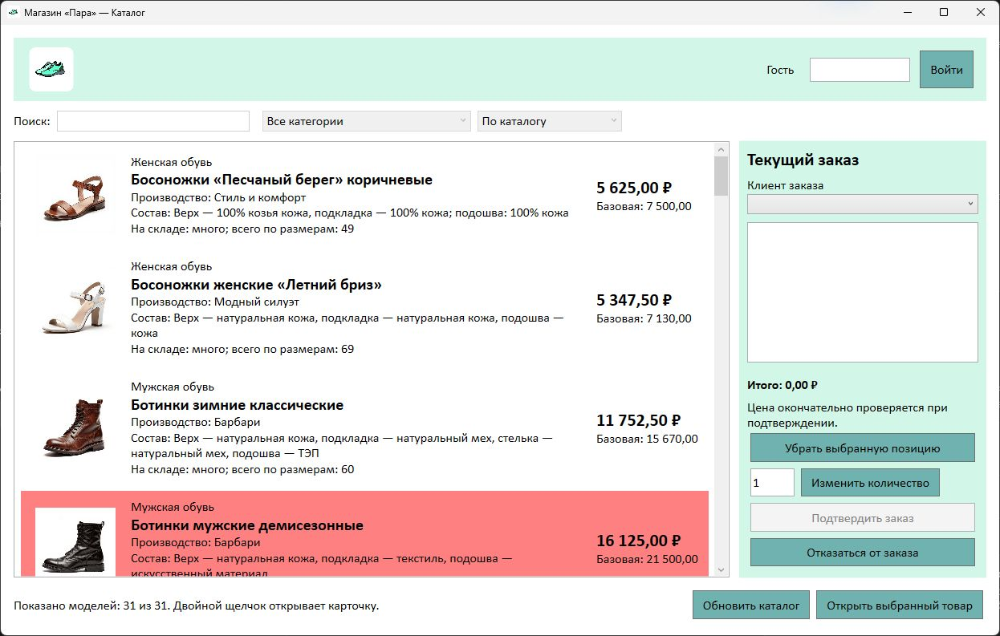
Каталог и учебный вход после подключения готовых компонентов. Настоящее окно WPF в отдельной проверочной БД. Показаны каталог, поля модели, цена и суммарные остатки.
В отчёте записать: «Пара» → своё Company; pp11_demo → pp11_vNN; item_id и product_id → значения SELECT своей БД; обувной размер → label из своей size; демонстрационная контрольная сумма → сумма собственного исходного снимка. Имена и суффиксы ролей подключений сохраняются. При иной принятой схеме сначала составить соответствие полей контракту, не переименовывая данные вслепую.
Проверка. Для каждого используемого ID известны запрос и строка, откуда он получен.
2
Контракт готовых частей
Product передаёт Id, Name, CategoryId, Category, Manufacturer, Composition, Description, ImagePath, Price, FinalPrice, Available. SizeItem связывает ItemId, Label и Available. Repository.Login/Catalog/Sizes получают эти данные через процедуры; ApplyFilter обрабатывает одну выборку. Цена вызывается через pp_price(product_id,date); цена UI не принимается за окончательную цену заказа.
Открыть database/02_checkout.sql из SQL образца. Подробные части в справочнике 8–10 объясняют входные параметры, проверку количества, запросный ключ, транзакцию, блокировку, запись цены и откат. Собрать полный файл до END и DELIMITER; выполнять только законченный объект. Сохраняемая поддержка ключа предоставлена образцом, её повторная разработка не оценивается.
Проверка. Процедура pp_checkout создана в рабочей БД; при ошибке выполнения проверить полный текст и выбранную БД, затем повторить файл целиком.
2
Проверить обязательную целостность
Нормальный заказ должен сохранять все строки и уменьшать соответствующие остатки. Если хотя бы одна позиция недоступна, заголовок, строки и остатки должны остаться прежними. COMMIT выполняется внутри процедуры; внешний BEGIN/ROLLBACK не использовать как способ отменить её результат.
В phpMyAdmin в административном подключении рабочей копии выполнить код ниже одним сеансом. Выбирается положительный остаток собственной позиции. При отсутствии такой позиции остановиться и проверить исходные данные; не подставлять 1 вслепую. Сохранить item_id, клиента, исходный остаток и количества заказов.
2
Получение ID и контроль заказа
SET @actor=(SELECT customer_id FROM customer WHERE login='pp_client');
SET @item=(SELECT item_id FROM stock_item WHERE available>0 ORDER BY item_id LIMIT 1);
SET @before=(SELECT available FROM stock_item WHERE item_id=@item);
SET @key=UUID();
SELECT @actor AS customer_id,@item AS item_id,@before AS stock_before;
CALL pp_checkout(@actor,@actor,JSON_ARRAY(JSON_OBJECT('item_id',@item,'quantity',1)),@key);
SET @order=(SELECT order_id FROM sales_order WHERE request_key=@key);
SELECT o.order_id,o.customer_id,l.item_id,l.quantity,l.unit_price,l.quantity*l.unit_price AS total
FROM sales_order o JOIN order_line l USING(order_id) WHERE o.order_id=@order;
SELECT @before AS before_value,available AS after_value FROM stock_item WHERE item_id=@item;
3
Сравнить результат
В таблице результата есть один новый заголовок, строка выбранной позиции с quantity=1, сохранённая unit_price и остаток @before−1. Зафиксировать ID заказа для последующего удаления. После перехода на другую вкладку сеансовые @переменные могут потеряться; получить значения заново запросами к БД.
Проверка. В отчёте сохранены SQL и реальные числа, а не только сообщение интерфейса.
По справочнику 11–13 собрать database/03_manage.sql: удаление заказа, строки и изменение даты. Для чтения списка и состава сохранить готовые процедуры из входного комплекта. В database/05_access.sql заменить БД и имена пользователей на свои, затем выполнить целиком после создания всех процедур.
Проверка. Менеджеру доступны заказ и его удаление, администратору дополнительно дата и строка; прямое изменение таблиц подключениям приложения не выдано.
В starter готовые вход, каталог, отбор, настройки и модели уже подключены. Точки самостоятельной работы обозначены исключением «Реализовать по методике». По справочнику 32–34 реализовать ProductWindow; по 45 реализовать OpenProduct, изменение и отмену корзины; по 46 — подтверждение и обновление. В Repository дополнить Checkout и методы управления из 29–30. Собирать после законченного файла с зависимостями.
Проверка. Карточка получает свои размеры; неподтверждённая корзина хранится в памяти; после подтверждения читается сохранённый заказ.
2
Что сохраняется готовым
Не заменять готовые Login, Catalog, Sizes, ApplyFilter и обработчики входа. Их код раскрыт в справочнике для понимания и проверки интеграции. Механизм ключа запроса уже сохраняется оболочкой; при изменении корзины ключ новый, при повторе неизвестного исхода прежний.
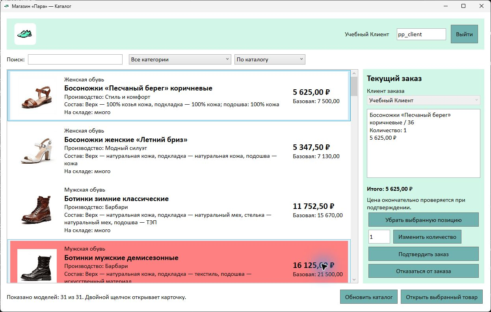
Корзина перед подтверждением. Настоящий заказ в памяти приложения после исправления количества. Сумма предварительная; окончательная цена сохраняется сервером при подтверждении.
По справочнику 35–37 заполнить OrdersWindow: верхняя таблица заказов, нижняя — состав выбранного, добавление через каталог, подтверждённое удаление, дата и удаление строки администратора. Во время загрузки состава не разрешать удалить строку предыдущего заказа.
Проверка. Все шесть операций из общего задания доступны своей роли, список обновляется после изменения.
Для независимого испытания восстановить отдельную проверочную копию из своего экспорта. Записать начальные количества заголовков, строк и остатки выбранных позиций. Не переносить изменённые остатки одного опыта в следующий без фиксации. Разделить ожидаемое значение, фактическое значение и вывод.
2
Успех и отказ
Оформить две разные размерные позиции; сравнить обе строки и уменьшение каждого остатка. Отменить другую непустую корзину и выйти из карточки без добавления: количества заголовков и строк, остатки прежние. Для отказа запросить у второй позиции остаток+1: новый заголовок и первая строка не сохраняются, оба остатка прежние.
Проверка. Снимок интерфейса дополнен SELECT до/после; сообщение об ошибке не считается доказательством полного отката.
3
Роли и удаление
Менеджером оформить заказ другому клиенту и проверить customer_id. Отказаться от предупреждения об удалении — данные прежние. Подтвердить удаление — вернулись все количества. Администратором удалить одну из двух строк, затем последнюю; пустой заголовок исчезает. Повторное удаление не возвращает остаток второй раз. Менеджер не меняет дату и не удаляет строку.
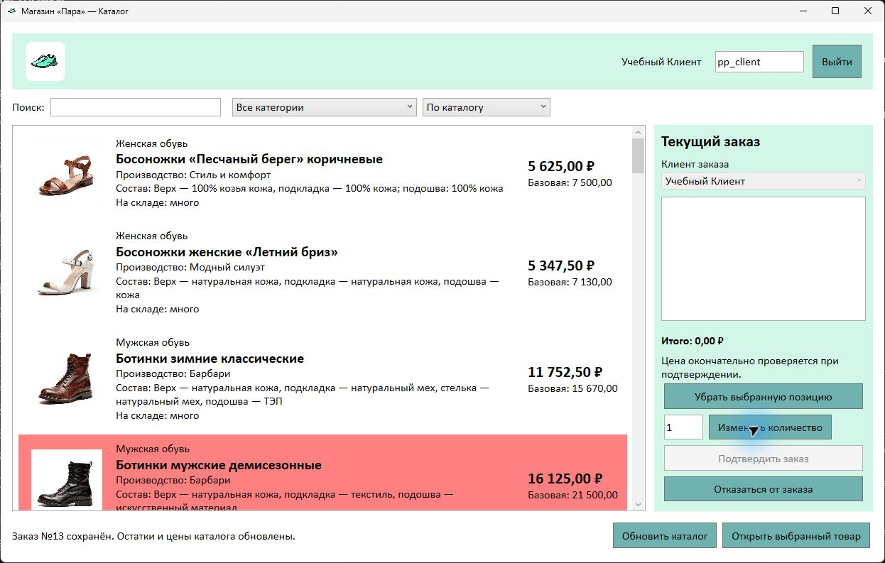
Подтверждение заказа и обновление каталога. Настоящее окно после заказа №13 в отдельной проверочной БД. SQL-проверка подтвердила item_id=1, quantity=1, unit_price=5625.00 и изменение остатка 10→9.
В отдельной копии выбрать product_id, сохранить все его stock_item. Поочерёдно установить суммарные остатки 3, 4, 5 и 6, например обнулить остальные размеры и задать нужную величину одной существующей позиции. После каждого изменения обновить каталог. Проверить SUM(available) WHERE product_id=полученный_ID; после опыта восстановить копию.
Проверка. 3 — подсветка и «мало»; 4 и 5 — без подсветки, «мало»; 6 — без подсветки, «много».
2
Проверить готовую цену
В проверочной копии выбрать модель, сохранить её цену и историю. Для даты 2027-01-15 сравнить pp_price до и после перемещения её единственного декабрьского заказа на 2027-01-01; остальные декабрьские заказы этой модели вынести за период в этой копии. Это проверка вызова готовой функции, не её повторная разработка. После опыта восстановить исходное состояние.
3
Сохранить историческую цену
Оформить заказ, сохранить unit_price и quantity. Изменить product.price в проверочной копии, затем дату заказа администратором; перечитать каталог и состав. Текущая цена может измениться, старая unit_price и quantity×unit_price должны сохраниться.
Открыть только свою карточку предметной области. По указанному там сценарию выбрать собственные модели, размеры и роли, подготовить отдельную проверочную копию и сохранить доказательства. Общие проверки обязательны для каждой области. Условия, помеченные расширением, выполнять отдельно после базы; их исходные формулировки сохранены.
Проверка. В отчёте названы оба условия своего варианта, их статус, исходные данные и результат; вместо своих чисел не подставлены числа «Пары».
3.14. Основной маршрут
Сообщения и внешний вид
1
Проверить ошибки
Ввести 0, отрицательное, дробное количество и буквы; затем исправить ввод и повторить действие. Получить нехватку, запрещённую роль и будущую дату. Для проверки подключения временно указать неверный порт в локальной копии настроек, запустить приложение, прочитать сообщение, вернуть порт и перезапустить. Не останавливать чужой сервер.
Проверка. У сообщений есть заголовок и соответствующая пиктограмма; текст называет причину и следующее действие. После исправления работа продолжается.
2
Проверить оформление
Сверить Calibri, логотип, иконку, заглушку, цвет кнопок #70B2AF и предметную подсветку #ff8080. Проверить длинное название и описание, модель без изображения, полный размерный ряд, видимость суммы и кнопок. Для собственной области заменить Company; изменение ресурсов объяснить в отчёте.
Проверка. Текст и данные не обрезаются при обычном размере окна; роль и выбранный клиент различимы.
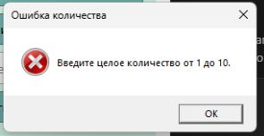
Отказ на нулевое количество. Настоящее сообщение WPF на QuantityBox=0: требуется целое значение в доступном диапазоне. После исправления можно продолжить работу.
Экспортировать готовую рабочую БД со структурой, данными, процедурами и функциями. Восстановить в новую БД на том же учебном сервере. Повторно назначить GRANT с новым именем БД; существующие серверные пользователи и DEFINER должны быть доступны. Заменить Database у всех четырёх подключений в локальной копии настроек. Сравнить исходные счётчики и историю до нового заказа, затем выполнить чтение, заказ и удаление. Перенос на новый сервер требует отдельного создания пользователей и DEFINER.
Проверка. Проверка выполнена в восстановленной БД; исходная рабочая БД не меняется.
2
Опубликовать собственный проект
В Visual Studio выбрать Git → Создать репозиторий, указать рабочую папку и свой GitHub. До первого commit убедиться, что .gitignore из заготовки сохранён. В окне изменений исключить settings.local.json, bin, obj, пароли, личные пути и данные студентов. Добавить README, исходники, settings.example.json без паролей и учебный SQL-экспорт. Выполнить commit и push. На GitHub открыть файлы и скопировать URL репозитория в отчёт. Если вход или доступ отсутствует, обратиться к преподавателю; не публиковать секреты ради завершения.
Проверка. Ссылка в отчёте открывает нужный проект; из новой копии можно восстановить БД, заполнить локальные настройки и запустить приложение.
Открыть report-template.docx в Word и сохранить под своим именем файла. Заполнить группу, ФИО, область, номер варианта и ссылку на репозиторий. В каждый блок рисунка вставить собственный снимок вместо рамки, сохранить подпись, рядом указать исходные и конечные значения. Таблицы результатов заполнять фактическими данными, не изображением успешной кнопки.
2
Проверить комплект
В отчёте обновить содержание: Ctrl+A → F9; выбрать обновление целиком. Проверить номера страниц и переносы рисунков. Подготовить презентацию с теми же рисунками и подписями по выданной форме. Приложить резервную копию и проект; проверить наличие индивидуального задания, аттестационного листа и справки. Открыть документы и ссылку перед передачей способом, указанным преподавателем.
Проверка. В отчёте нет пустых обязательных мест и чужих демонстрационных результатов; все обязательные испытания имеют вывод.
3.17. Основной маршрут
Расширения после базового результата
1
Повтор одного ключа
В отдельной копии сохранить @key=UUID(), actor, item и количество. Дважды вызвать pp_checkout с теми же параметрами и ключом в одном сеансе; SELECT по request_key возвращает один order_id, остаток уменьшается один раз. Для двух независимых покупок получить два разных ключа. При сетевом неизвестном исходе не менять корзину и ключ до выяснения результата.
Проверка. Один повтор и две независимые покупки различены; запросы и ключи сохранены в локальном протоколе.
2
Три соединения конкуренции
В отдельной копии администратором установить выбранному item_id остаток 1. Открыть три независимые сессии: администратор, клиент A, клиент B. Администратор: BEGIN; SELECT available FROM stock_item WHERE item_id=полученный_ID FOR UPDATE;. Клиенты A и B вызывают pp_checkout с количеством 1 и разными ключами; оба ждут. Администратор выполняет COMMIT. Один вызов проходит, второй получает NOT_ENOUGH_STOCK; итоговый остаток 0. Сохранить порядок действий трёх сессий. Два последовательных вызова не доказывают конкуренцию.
3
Задержка и обрыв
Проверять только свою копию. Для неизвестного сетевого исхода разорвать соединение своего клиента после отправки, затем восстановить и повторить с тем же ключом; не останавливать общий MySQL. Для задержки списка удержать нужную строку блокировкой из административной сессии и проверить быстрый выбор другого заказа. Если среда не позволяет воспроизведение, указать «не выполнено», а не выдавать последовательный опыт за сетевой.
Разделы готовых компонентов служат для понимания и проверки. Операции заказа дорабатываются в своём проекте по основному маршруту.
Справочник 1
Исходная точка и карта решения
Готовый компонент. Изучить и проверить интеграцию; создавать повторно не требуется.
1
Что построим
На области магазина «Пара» создадим приложение с тремя окнами: каталогом и корзиной, карточкой товара, списком заказов. Repository выполняет только параметризованные CALL, SQL-процедуры проверяют роль и изменяют БД. Product и CartLine передают данные между слоями; корзина до подтверждения существует только в памяти приложения.
2
Почему нужен каждый слой
Интерфейс собирает выбор пользователя, Repository переводит его в запрос, СУБД проверяет существование клиента, остаток и права и сохраняет результат. Затем приложение заново читает данные. Так сообщение «Заказ сохранён» опирается на сохранённый результат, а отмена корзины не требует удаления строк из БД.
3
Алгоритм
Входные данные: клиент, позиции «модель + размер», количества. Сначала проверить ввод; при подтверждении проверить роль и ключ запроса; начать транзакцию; заблокировать позиции по возрастанию идентификатора; проверить остатки; рассчитать и сохранить цены; уменьшить остатки; зафиксировать; перечитать каталог. При ошибке откатить все изменения. Для скидки определить начало текущего месяца, вычесть календарный месяц, искать заказы в полуинтервале [начало прошлого; начало текущего).
4
Получить основу
Скачать БД и CSV демонстрационного магазина «Пара» — прямая ссылка под заголовком этого раздела — это подготовленные материалы исходного комплекта. Скачать заготовку WPF и ресурсы магазина — прямая ссылка под заголовком этого раздела — источник пустого проекта, логотипа, иконки и заглушки. Скачать SQL для доработки исходной БД — прямая ссылка под заголовком этого раздела — код ниже относится к этим файлам. Скачать итоговый пример для последующей сверки — прямая ссылка под заголовком этого раздела — не заменяет построение решения.
Справочник 2
Проверка среды и создание рабочей копии
1
Запустить XAMPP
Открыть XAMPP Control Panel. У уже установленного MySQL нажать Start, если он остановлен; для phpMyAdmin требуется также Apache. Нажать Admin возле MySQL. В верхней части phpMyAdmin записать версию сервера и версию phpMyAdmin в отчёт. Здесь проверена MariaDB 10.4.32 и phpMyAdmin 5.2.1; она входит в установленный XAMPP и принимает приведённый SQL. Не путать это с отдельным PostgreSQL.
2
Сохранить исходную БД
В левой панели выбрать собственную БД исходного комплекта → Экспорт → Обычный → SQL. Включите структуру, данные, процедуры и функции; проверить, что в предварительном списке отмечены только объекты этой БД. Выполнить экспорт. Он нужен, чтобы воспроизвести исходное состояние независимо от текущих действий.
3
Восстановить копию
Нажать Создать в левой панели, задать pp11_demo для демонстрации или pp11_vNN для своего варианта, выбрать utf8mb4_bin → Создать. Выделить новую БД → Импорт → Выбрать файл. Для демонстрации взять materials/demo/baseline.sql из исходного архива; для своего варианта — собственную резервную копию или baseline.sql из архива именно своего варианта. Формат SQL, кодировка utf-8 → Импорт. Архив не содержит команды USE: выбранная БД определяет место восстановления.
4
Проверить исходные данные
Открыть SQL у выбранной БД. Выполнить SELECT COUNT(*) FROM product; аналогично size, stock_item, customer, sales_order, order_line. Затем SELECT SUM(available) FROM stock_item; SELECT SUM(total) FROM order_totals;. У «Пара» ожидаются 31, 35, 92, 20, 10, 30; 1274 и 341770.00 соответственно. Несовпадение сначала выясните по исходным данным, не компенсировать удалением случайных строк. Исходный импорт повторно в заполненной БД не запускать.
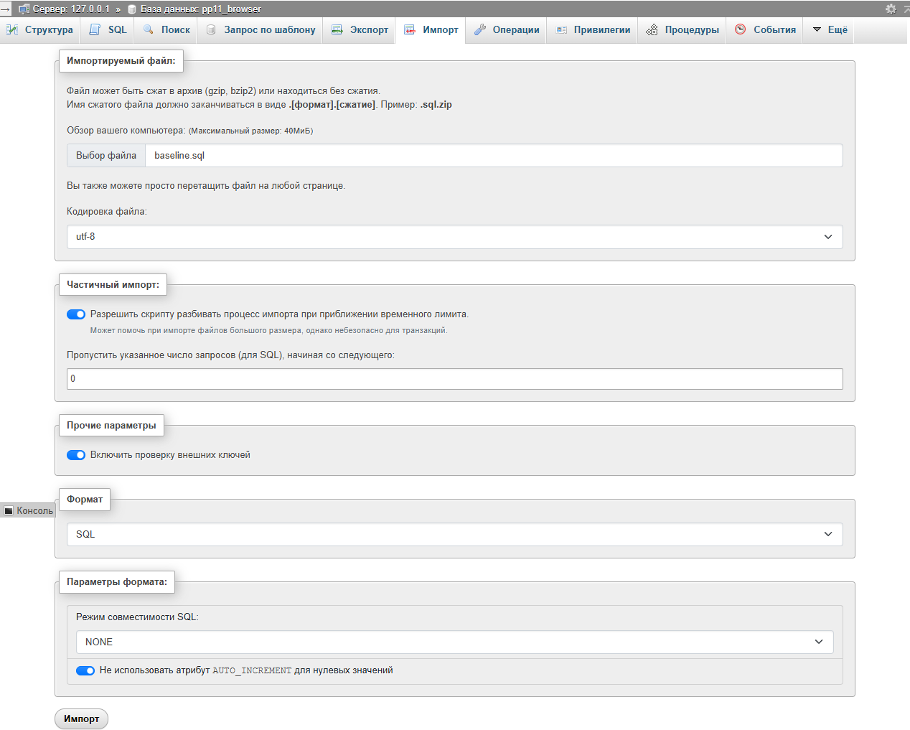
Реальный результат в phpMyAdmin. Настройка импорта исходной базы в отдельную pp11_browser. Снимок получен из реально открытого phpMyAdmin.Справочник 3
Как вводить SQL и проверять законченный объект
1
Открыть место выполнения
Из архива SQL распаковать папку database. В Visual Studio можно открыть SQL через Файл → Открыть → Файл для чтения; выполнение производится в phpMyAdmin. Выделить рабочую БД в левой панели, открыть вкладку SQL. Вставлять полный законченный файл с DELIMITER и нажимать Вперёд. После успешного выполнения проверить вкладку Процедуры: функция или процедура должна появиться.
2
Порядок фрагментов
Ниже каждый файл объясняется логическими частями. Создать файл с указанным именем, вставить первый фрагмент, затем дописать следующие в конец, включая закрывающие строки. Части тела BEGIN…END по отдельности не выполнять: объект готов после последнего фрагмента своего файла. ALTER TABLE и CREATE изменяют структуру сразу; ROLLBACK не отменяет DDL. Доработки выполняются только в учебной копии.
3
Проверка причины
Задать ожидаемый результат до запроса. Если цена отличается, проверить календарные границы и реальные заказы именно модели; если операция отказала, проверить роль, количество и текущий размерный остаток. После изменения повторить исходный случай и соседние случаи: это подтверждает и исправление, и сохранность остальных функций.
Справочник 4
Дополнительные учебные пользователи для проверки всех ролей
1
Где и зачем
Создать или заменить файл с начала: database/00_training_users.sql. Фрагмент 1 из 1 этого файла. Исходные варианты содержат только клиентов. Добавляем три явно учебных логина, чтобы сравнить клиентскую, менеджерскую и административную функции. INSERT…SELECT получает role_id по имени; NOT EXISTS сохраняет уже существующую запись. Это пользователи приложения, не учётные записи сервера.
2
Код: 00_training_users.sql
-- === Дополнительные учебные пользователи для проверки всех ролей
INSERT INTO app_role(name) VALUES('Клиент'),('Менеджер'),('Администратор')
ON DUPLICATE KEY UPDATE name=VALUES(name);
INSERT INTO customer(login,last_name,first_name,patronymic,role_id)
SELECT 'pp_client','Учебный','Клиент','',role_id FROM app_role
WHERE name='Клиент' AND NOT EXISTS(SELECT 1 FROM customer WHERE login='pp_client');
INSERT INTO customer(login,last_name,first_name,patronymic,role_id)
SELECT 'pp_manager','Учебный','Менеджер','',role_id FROM app_role
WHERE name='Менеджер' AND NOT EXISTS(SELECT 1 FROM customer WHERE login='pp_manager');
INSERT INTO customer(login,last_name,first_name,patronymic,role_id)
SELECT 'pp_admin','Учебный','Администратор','',role_id FROM app_role
WHERE name='Администратор' AND NOT EXISTS(SELECT 1 FROM customer WHERE login='pp_admin');
3
Сохранение и проверка
После выполнения SELECT login FROM customer WHERE login LIKE 'pp_%'; должен показать pp_client, pp_manager, pp_admin. Исходные 20 пользователей демонстрации сохраняются; всего теперь 23. В индивидуальном исходном наборе 2 клиента; после добавления всего 5.
Справочник 5
Миграция без изменения исторических цен
Готовый компонент. Изучить и проверить интеграцию; создавать повторно не требуется.
1
Где и зачем
Создать или заменить файл с начала: database/01_price.sql. Фрагмент 1 из 3 этого файла. request_key хранит идентификатор подтверждения, created_by — его автора. UNIQUE запрещает два заголовка с одним ключом. Новые поля nullable, поэтому исходные заказы не изменяют цену и не требуют фиктивных ключей.
2
Код: 01_price.sql
-- === Миграция без изменения исторических цен
ALTER TABLE sales_order ADD COLUMN IF NOT EXISTS request_key CHAR(36) NULL;
ALTER TABLE sales_order ADD COLUMN IF NOT EXISTS created_by BIGINT NULL;
CREATE UNIQUE INDEX IF NOT EXISTS ux_order_request ON sales_order(request_key);
3
Сохранение и проверка
После полного файла открыть структуру sales_order; видны новые поля и уникальный индекс. SELECT SUM(total) FROM order_totals; по-прежнему возвращает 341770.00 только для неизменённого образца «Пара»; для своей области использовать сумму исходного снимка.
Справочник 6
Цена относительно календарного месяца
1
Где и зачем
Дописать в конец текущего файла: database/01_price.sql. Фрагмент 2 из 3 этого файла. DATE_SUB определяет первое число текущего и предыдущего месяца. EXISTS проверяет историю модели через размерные позиции, а не один размер. Полуинтервал исключает начало текущего месяца. Если заказов нет, цена умножается на 0.75; ROUND возвращает копейки.
2
Код: 01_price.sql
-- === Цена относительно календарного месяца
DROP FUNCTION IF EXISTS pp_price;
DELIMITER $$
CREATE FUNCTION pp_price(p_product BIGINT,p_date DATE)
RETURNS DECIMAL(12,2) READS SQL DATA SQL SECURITY DEFINER
BEGIN
DECLARE v_start DATE;
DECLARE v_price DECIMAL(12,2);
SET v_start=DATE_SUB(p_date,INTERVAL DAYOFMONTH(p_date)-1 DAY);
SELECT p.price * IF(EXISTS(
SELECT 1 FROM order_line l JOIN stock_item s USING(item_id)
JOIN sales_order o USING(order_id)
WHERE s.product_id=p.product_id
AND o.ordered_at>=DATE_SUB(v_start,INTERVAL 1 MONTH)
AND o.ordered_at<v_start
),1,0.75) INTO v_price FROM product p WHERE p.product_id=p_product;
RETURN ROUND(v_price,2);
END$$
DELIMITER ;
3
Сохранение и проверка
После последнего фрагмента выполнить SELECT product_id,price,pp_price(product_id,CURDATE()) AS final_price FROM product;. При отсутствии заказов в прошлом месяце 101.00 превращается в 75.75. На январской дате проверять декабрь предыдущего года.
Справочник 7
Роль пользователя и роль подключения
1
Где и зачем
Дописать в конец текущего файла: database/01_price.sql. Фрагмент 3 из 3 этого файла. customer связан с app_role. USER() определяет фактическую учётную запись соединения: суффикс _client/_manager/_admin должен соответствовать роли пользователя. Поэтому клиентское подключение не сможет выдать себя за менеджера лишь подстановкой actor. root используется только администратором для настройки и SQL-проверки.
2
Код: 01_price.sql
-- === Роль пользователя и роль подключения
DROP FUNCTION IF EXISTS pp_role;
DELIMITER $$
CREATE FUNCTION pp_role(p_actor BIGINT)
RETURNS VARCHAR(20) READS SQL DATA SQL SECURITY DEFINER
BEGIN
DECLARE v_role VARCHAR(20);
DECLARE v_account VARCHAR(80);
SELECT CASE r.name WHEN 'Администратор' THEN 'admin'
WHEN 'Менеджер' THEN 'manager' ELSE 'client' END
INTO v_role FROM customer c JOIN app_role r USING(role_id)
WHERE c.customer_id=p_actor;
SET v_account=SUBSTRING_INDEX(USER(),'@',1);
IF v_role IS NULL OR (v_account<>'root' AND
(v_account NOT LIKE 'pp11\_%' OR
SUBSTRING_INDEX(v_account,'_',-1)<>v_role)) THEN
SIGNAL SQLSTATE '45000' SET MESSAGE_TEXT='ROLE_DENIED';
END IF;
RETURN v_role;
END$$
DELIMITER ;
3
Сохранение и проверка
Полный файл завершён: выполнить в SQL. Позднее проверять pp_role через процедуры реальными ограниченными подключениями; SET ROLE в root не подтверждает запрет.
Справочник 8
Контракт заказа и обработчик отката
1
Где и зачем
Создать или заменить файл с начала: database/02_checkout.sql. Фрагмент 1 из 3 этого файла. pp_checkout получает автора, клиента, JSON позиций и ключ. Курсор обходит объединённые позиции по item_id; единый порядок уменьшает конфликт блокировок. EXIT HANDLER при SQL-ошибке делает ROLLBACK, удаляет временную таблицу и передаёт ошибку вызывающему приложению.
2
Код: 02_checkout.sql
-- === Контракт заказа и обработчик отката
DROP PROCEDURE IF EXISTS pp_checkout;
DELIMITER $$
CREATE PROCEDURE pp_checkout(IN p_actor BIGINT,IN p_customer BIGINT,
IN p_lines LONGTEXT,IN p_key CHAR(36)) SQL SECURITY DEFINER
proc: BEGIN
DECLARE v_role VARCHAR(20);
DECLARE v_order BIGINT;
DECLARE v_creator BIGINT;
DECLARE v_item BIGINT;
DECLARE v_product BIGINT;
DECLARE v_quantity INT;
DECLARE v_available INT;
DECLARE v_price DECIMAL(12,2);
DECLARE v_date DATETIME;
DECLARE v_index INT DEFAULT 0;
DECLARE v_done INT DEFAULT 0;
DECLARE v_id_text TEXT;
DECLARE v_qty_text TEXT;
DECLARE cur CURSOR FOR SELECT item_id,quantity FROM pp_request ORDER BY item_id;
DECLARE CONTINUE HANDLER FOR NOT FOUND SET v_done=1;
DECLARE EXIT HANDLER FOR SQLEXCEPTION
BEGIN
ROLLBACK;
DROP TEMPORARY TABLE IF EXISTS pp_request;
RESIGNAL;
END;
3
Сохранение и проверка
Это начало процедуры, пока не выполнять. Собрать файл до END и DELIMITER. Пример входного JSON: [{"item_id":1,"quantity":1}].
Справочник 9
Роль, повтор запроса и проверка входа
1
Где и зачем
Дописать в конец текущего файла: database/02_checkout.sql. Фрагмент 2 из 3 этого файла. Клиент оформляет только себе; сотрудник выбирает клиента. Уже сохранённый request_key возвращает прежний order_id тому же автору. Проверяются формат ключа, массив и положительные целые значения; повторяющиеся item_id объединяются. Временная таблица принадлежит отдельному соединению.
2
Код: 02_checkout.sql
-- === Роль, повтор запроса и проверка входа
SET v_role=pp_role(p_actor);
IF v_role='client' AND p_customer<>p_actor THEN
SIGNAL SQLSTATE '45000' SET MESSAGE_TEXT='ROLE_DENIED';
END IF;
IF p_key IS NULL OR p_key NOT REGEXP
'^[0-9a-fA-F]{8}-[0-9a-fA-F]{4}-[0-9a-fA-F]{4}-[0-9a-fA-F]{4}-[0-9a-fA-F]{12}$' THEN
SIGNAL SQLSTATE '45000' SET MESSAGE_TEXT='INVALID_REQUEST';
END IF;
SET v_order=(SELECT order_id FROM sales_order WHERE request_key=p_key);
IF v_order IS NOT NULL THEN
SELECT created_by INTO v_creator FROM sales_order WHERE order_id=v_order;
IF v_creator<>p_actor THEN
SIGNAL SQLSTATE '45000' SET MESSAGE_TEXT='ROLE_DENIED';
END IF;
SELECT v_order AS created_order;
LEAVE proc;
END IF;
IF p_lines IS NULL OR JSON_VALID(p_lines)=0 THEN
SIGNAL SQLSTATE '45000' SET MESSAGE_TEXT='INVALID_LINES';
END IF;
IF JSON_TYPE(p_lines)<>'ARRAY' OR JSON_LENGTH(p_lines)=0 THEN
SIGNAL SQLSTATE '45000' SET MESSAGE_TEXT='EMPTY_ORDER';
END IF;
IF NOT EXISTS(SELECT 1 FROM customer WHERE customer_id=p_customer) THEN
SIGNAL SQLSTATE '45000' SET MESSAGE_TEXT='UNKNOWN_CUSTOMER';
END IF;
DROP TEMPORARY TABLE IF EXISTS pp_request;
CREATE TEMPORARY TABLE pp_request(item_id BIGINT PRIMARY KEY,
quantity INT NOT NULL) ENGINE=InnoDB;
WHILE v_index<JSON_LENGTH(p_lines) DO
SET v_id_text=JSON_UNQUOTE(JSON_EXTRACT(p_lines,CONCAT('$[',v_index,'].item_id')));
SET v_qty_text=JSON_UNQUOTE(JSON_EXTRACT(p_lines,CONCAT('$[',v_index,'].quantity')));
IF v_id_text IS NULL OR v_qty_text IS NULL
OR v_id_text NOT REGEXP '^[1-9][0-9]{0,9}$'
OR v_qty_text NOT REGEXP '^[1-9][0-9]{0,5}$' THEN
SIGNAL SQLSTATE '45000' SET MESSAGE_TEXT='INVALID_QUANTITY';
END IF;
INSERT INTO pp_request VALUES(CAST(v_id_text AS UNSIGNED),CAST(v_qty_text AS UNSIGNED))
ON DUPLICATE KEY UPDATE quantity=quantity+VALUES(quantity);
SET v_index=v_index+1;
END WHILE;
3
Сохранение и проверка
Продолжите файл. После его завершения проверить пустой массив, количество 0 и неизвестного клиента: новые заказы и остатки не меняются.
Справочник 10
Сохранение цены и остатков одной транзакцией
1
Где и зачем
Дописать в конец текущего файла: database/02_checkout.sql. Фрагмент 3 из 3 этого файла. Время фиксируется один раз. Заголовок и строки находятся в одной транзакции; SELECT…FOR UPDATE блокирует конкретные остатки. pp_price вычисляет окончательную цену на дату заказа; unit_price сохраняет её как историю. COMMIT выполняется только после всех позиций. Исходная place_order остаётся для сопоставления учебной практики и не вызывается приложением.
2
Код: 02_checkout.sql
-- === Сохранение цены и остатков одной транзакцией
SET v_date=NOW();
START TRANSACTION;
INSERT INTO sales_order(customer_id,ordered_at,request_key,created_by)
VALUES(p_customer,v_date,p_key,p_actor);
SET v_order=LAST_INSERT_ID();
SET v_done=0;
OPEN cur;
read_loop: LOOP
FETCH cur INTO v_item,v_quantity;
IF v_done=1 THEN LEAVE read_loop; END IF;
SET v_available=NULL;
SELECT available,product_id INTO v_available,v_product
FROM stock_item WHERE item_id=v_item FOR UPDATE;
IF v_available IS NULL THEN
SIGNAL SQLSTATE '45000' SET MESSAGE_TEXT='UNKNOWN_ITEM';
END IF;
IF v_available<v_quantity THEN
SIGNAL SQLSTATE '45000' SET MESSAGE_TEXT='NOT_ENOUGH_STOCK';
END IF;
SET v_price=pp_price(v_product,DATE(v_date));
INSERT INTO order_line(order_id,item_id,quantity,unit_price)
VALUES(v_order,v_item,v_quantity,v_price);
UPDATE stock_item SET available=available-v_quantity WHERE item_id=v_item;
END LOOP;
CLOSE cur;
COMMIT;
DROP TEMPORARY TABLE pp_request;
SELECT v_order AS created_order;
END$$
DELIMITER ;
3
Сохранение и проверка
Выполнить законченный файл. Реальные ID, положительный остаток и связанный вызов получать по основному этапу «Первый проверочный заказ». Запрос с буквальным id не выполнять. После вызова сравнить заголовок, строки, unit_price и уменьшение остатка.
Справочник 11
Отмена заказа с возвратом всех позиций
1
Где и зачем
Создать или заменить файл с начала: database/03_manage.sql. Фрагмент 1 из 3 этого файла. Роль должна быть manager или admin. Заголовок блокируется до изменения, строки обходятся в порядке item_id. Возврат количества и удаление заголовка выполняются в одной транзакции, строки удаляются по внешнему ключу CASCADE. Повторное удаление не возвращает товары вторично.
2
Код: 03_manage.sql
-- === Отмена заказа с возвратом всех позиций
DROP PROCEDURE IF EXISTS pp_delete_order;
DELIMITER $$
CREATE PROCEDURE pp_delete_order(IN p_actor BIGINT,IN p_order BIGINT)
SQL SECURITY DEFINER
BEGIN
DECLARE v_id BIGINT;
DECLARE v_item BIGINT;
DECLARE v_qty INT;
DECLARE v_done INT DEFAULT 0;
DECLARE cur CURSOR FOR SELECT item_id,quantity FROM order_line
WHERE order_id=p_order ORDER BY item_id;
DECLARE CONTINUE HANDLER FOR NOT FOUND SET v_done=1;
DECLARE EXIT HANDLER FOR SQLEXCEPTION BEGIN ROLLBACK; RESIGNAL; END;
IF pp_role(p_actor) NOT IN ('manager','admin') THEN
SIGNAL SQLSTATE '45000' SET MESSAGE_TEXT='ROLE_DENIED';
END IF;
START TRANSACTION;
SET v_id=NULL;
SELECT order_id INTO v_id FROM sales_order WHERE order_id=p_order FOR UPDATE;
IF v_id IS NULL THEN
SIGNAL SQLSTATE '45000' SET MESSAGE_TEXT='ORDER_NOT_FOUND';
END IF;
SET v_done=0;
OPEN cur;
read_loop: LOOP
FETCH cur INTO v_item,v_qty;
IF v_done=1 THEN LEAVE read_loop; END IF;
UPDATE stock_item SET available=available+v_qty WHERE item_id=v_item;
END LOOP;
CLOSE cur;
DELETE FROM sales_order WHERE order_id=p_order;
COMMIT;
END$$
DELIMITER ;
3
Сохранение и проверка
После всего файла сохранить число остатков, оформить небольшой заказ и удалить его через pp_delete_order от pp_manager. Остатки возвращаются к исходным; повторный вызов получает ORDER_NOT_FOUND и ничего не меняет.
Справочник 12
Удаление строки администратором
1
Где и зачем
Дописать в конец текущего файла: database/03_manage.sql. Фрагмент 2 из 3 этого файла. Администратор блокирует заголовок и выбранную строку. Возвращается ровно quantity этой строки. Когда строк больше нет, удаляется пустой заголовок; остальные заказы не затрагиваются.
2
Код: 03_manage.sql
-- === Удаление строки администратором
DROP PROCEDURE IF EXISTS pp_delete_line;
DELIMITER $$
CREATE PROCEDURE pp_delete_line(IN p_actor BIGINT,IN p_order BIGINT,IN p_item BIGINT)
SQL SECURITY DEFINER
BEGIN
DECLARE v_id BIGINT;
DECLARE v_qty INT;
DECLARE EXIT HANDLER FOR SQLEXCEPTION BEGIN ROLLBACK; RESIGNAL; END;
IF pp_role(p_actor)<>'admin' THEN
SIGNAL SQLSTATE '45000' SET MESSAGE_TEXT='ROLE_DENIED';
END IF;
START TRANSACTION;
SET v_id=(SELECT order_id FROM sales_order WHERE order_id=p_order FOR UPDATE);
SET v_qty=(SELECT quantity FROM order_line
WHERE order_id=p_order AND item_id=p_item FOR UPDATE);
IF v_id IS NULL OR v_qty IS NULL THEN
SIGNAL SQLSTATE '45000' SET MESSAGE_TEXT='LINE_NOT_FOUND';
END IF;
UPDATE stock_item SET available=available+v_qty WHERE item_id=p_item;
DELETE FROM order_line WHERE order_id=p_order AND item_id=p_item;
IF NOT EXISTS(SELECT 1 FROM order_line WHERE order_id=p_order) THEN
DELETE FROM sales_order WHERE order_id=p_order;
END IF;
COMMIT;
END$$
DELIMITER ;
3
Сохранение и проверка
После полного файла оформить заказ с двумя позициями, удалить первую pp_delete_line, сравнить остатки обеих; удалить вторую и убедитесь, что заголовка больше нет. Клиентское и менеджерское подключения не получают EXECUTE этой процедуры.
Справочник 13
Изменение даты без пересчёта исторических цен
1
Где и зачем
Дописать в конец текущего файла: database/03_manage.sql. Фрагмент 3 из 3 этого файла. Администратор меняет ordered_at, но не unit_price. Будущая дата отклоняется. ROW_COUNT может быть 0 и при неизменившейся дате, поэтому существование заказа проверяется отдельно. Изменение истории может повлиять на текущую скидку каталога, но не на сохранённую цену заказа.
2
Код: 03_manage.sql
-- === Изменение даты без пересчёта исторических цен
DROP PROCEDURE IF EXISTS pp_change_date;
DELIMITER $$
CREATE PROCEDURE pp_change_date(IN p_actor BIGINT,IN p_order BIGINT,IN p_date DATETIME)
SQL SECURITY DEFINER
BEGIN
IF pp_role(p_actor)<>'admin' THEN
SIGNAL SQLSTATE '45000' SET MESSAGE_TEXT='ROLE_DENIED';
END IF;
IF p_date IS NULL OR p_date>NOW() THEN
SIGNAL SQLSTATE '45000' SET MESSAGE_TEXT='INVALID_DATE';
END IF;
UPDATE sales_order SET ordered_at=p_date WHERE order_id=p_order;
IF ROW_COUNT()=0 AND NOT EXISTS(SELECT 1 FROM sales_order WHERE order_id=p_order) THEN
SIGNAL SQLSTATE '45000' SET MESSAGE_TEXT='ORDER_NOT_FOUND';
END IF;
END$$
DELIMITER ;
3
Сохранение и проверка
Файл завершён: выполнить целиком. Изменить дату созданного тестового заказа и сравнить цену строки до/после. Проверять отказ на будущую дату и отсутствие побочных изменений.
Справочник 14
Каталог из БД с единой ценой и остатком
Готовый компонент. Изучить и проверить интеграцию; создавать повторно не требуется.
1
Где и зачем
Создать или заменить файл с начала: database/04_read.sql. Фрагмент 1 из 3 этого файла. LEFT JOIN сохраняет модель даже без размерных позиций; COALESCE возвращает ноль. SUM объединяет остатки всех размеров. GROUP BY включает все неагрегированные поля, поэтому запрос совместим с строгим режимом группировки. Приложение получает базовую и итоговую цену отдельно.
2
Код: 04_read.sql
-- === Каталог из БД с единой ценой и остатком
DROP PROCEDURE IF EXISTS pp_catalog;
DELIMITER $$
CREATE PROCEDURE pp_catalog(IN p_date DATE) SQL SECURITY DEFINER
BEGIN
SELECT p.product_id,p.name,c.category_id,c.name AS category,
m.name AS manufacturer,p.composition,p.description,p.image_path,
p.price,pp_price(p.product_id,p_date) AS final_price,
COALESCE(SUM(s.available),0) AS available
FROM product p JOIN subcategory sc USING(subcategory_id)
JOIN category c USING(category_id) JOIN manufacturer m USING(manufacturer_id)
LEFT JOIN stock_item s USING(product_id)
GROUP BY p.product_id,p.name,c.category_id,c.name,m.name,p.composition,
p.description,p.image_path,p.price ORDER BY p.product_id;
END$$
DELIMITER ;
3
Сохранение и проверка
После полного файла CALL pp_catalog(CURDATE()); возвращает 31 модель «Пара», суммарные остатки совпадают с stock_item. Изображение находится по image_path, а отсутствие файла обрабатывает модель Product.
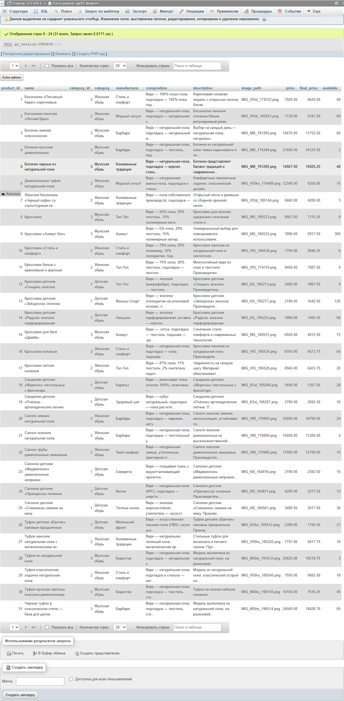
Реальный результат в phpMyAdmin. Результат реального CALL pp_catalog(CURDATE()): исходная и итоговая цены, суммарные остатки.Справочник 15
Вход по логину и размерный ряд
Готовый компонент. Изучить и проверить интеграцию; создавать повторно не требуется.
1
Где и зачем
Дописать в конец текущего файла: database/04_read.sql. Фрагмент 2 из 3 этого файла. pp_login возвращает только пользователя выбранного логина и роль; пароль приложения в этом учебном сценарии не запрашивается. pp_sizes возвращает размерный ряд с текущими остатками; интерфейс разрешит добавление только положительных остатков.
2
Код: 04_read.sql
-- === Вход по логину и размерный ряд
DROP PROCEDURE IF EXISTS pp_login;
DROP PROCEDURE IF EXISTS pp_sizes;
DELIMITER $$
CREATE PROCEDURE pp_login(IN p_login VARCHAR(80)) SQL SECURITY DEFINER
BEGIN
SELECT c.customer_id,CONCAT_WS(' ',c.last_name,c.first_name,
NULLIF(c.patronymic,'')) AS fio,
CASE r.name WHEN 'Администратор' THEN 'admin'
WHEN 'Менеджер' THEN 'manager' ELSE 'client' END AS role_name
FROM customer c JOIN app_role r USING(role_id) WHERE c.login=p_login;
END$$
CREATE PROCEDURE pp_sizes(IN p_product BIGINT) SQL SECURITY DEFINER
BEGIN
SELECT s.item_id,z.label,s.available FROM stock_item s JOIN size z USING(size_id)
WHERE s.product_id=p_product ORDER BY z.size_id;
END$$
DELIMITER ;
3
Сохранение и проверка
После полного файла CALL pp_login('pp_client'); и CALL pp_sizes(1); возвращают пользователя и размеры модели. Для неизвестного логина результат пустой.
Справочник 16
Данные для работы сотрудников
1
Где и зачем
Дописать в конец текущего файла: database/04_read.sql. Фрагмент 3 из 3 этого файла. pp_customers даёт сотруднику выбор клиента. pp_orders вычисляет суммы из исторических цен, pp_lines раскрывает состав с производителем и размером. Проверка роли находится и в процедуре, и в приложении; прямой доступ к таблицам клиенту не требуется.
2
Код: 04_read.sql
-- === Данные для работы сотрудников
DROP PROCEDURE IF EXISTS pp_customers;
DROP PROCEDURE IF EXISTS pp_orders;
DROP PROCEDURE IF EXISTS pp_lines;
DELIMITER $$
CREATE PROCEDURE pp_customers(IN p_actor BIGINT) SQL SECURITY DEFINER
BEGIN
IF pp_role(p_actor) NOT IN ('manager','admin') THEN
SIGNAL SQLSTATE '45000' SET MESSAGE_TEXT='ROLE_DENIED';
END IF;
SELECT customer_id,CONCAT_WS(' ',last_name,first_name,NULLIF(patronymic,'')) AS fio
FROM customer ORDER BY last_name,first_name,customer_id;
END$$
CREATE PROCEDURE pp_orders(IN p_actor BIGINT) SQL SECURITY DEFINER
BEGIN
IF pp_role(p_actor) NOT IN ('manager','admin') THEN
SIGNAL SQLSTATE '45000' SET MESSAGE_TEXT='ROLE_DENIED';
END IF;
SELECT o.order_id,o.ordered_at,
CONCAT_WS(' ',c.last_name,c.first_name,NULLIF(c.patronymic,'')) AS fio,
COALESCE(SUM(l.quantity*l.unit_price),0) AS total
FROM sales_order o JOIN customer c USING(customer_id)
LEFT JOIN order_line l USING(order_id)
GROUP BY o.order_id,o.ordered_at,c.last_name,c.first_name,c.patronymic
ORDER BY o.ordered_at DESC,o.order_id DESC;
END$$
CREATE PROCEDURE pp_lines(IN p_actor BIGINT,IN p_order BIGINT) SQL SECURITY DEFINER
BEGIN
IF pp_role(p_actor) NOT IN ('manager','admin') THEN
SIGNAL SQLSTATE '45000' SET MESSAGE_TEXT='ROLE_DENIED';
END IF;
SELECT l.item_id,CONCAT(p.name,' / ',m.name,' / ',z.label) AS position,
l.quantity,l.unit_price,l.quantity*l.unit_price AS total
FROM order_line l JOIN stock_item s USING(item_id) JOIN product p USING(product_id)
JOIN manufacturer m USING(manufacturer_id) JOIN size z USING(size_id)
WHERE l.order_id=p_order ORDER BY l.item_id;
END$$
DELIMITER ;
3
Сохранение и проверка
Файл завершён: выполнить. Получить customer_id учебного менеджера и проверить CALL pp_orders(id);. Каталог и список берутся из одной БД, а не из локального JSON.
Справочник 17
Создание ограниченных подключений СУБД
1
Точные действия в phpMyAdmin
Вернитесь на уровень сервера → Учётные записи пользователей → Добавить учётную запись пользователя. Имя pp11_demo_login, хост localhost (Локальный), пароль задать локально. Не выбирать создание БД с именем пользователя и не отмечать глобальные привилегии. Нажать Вперёд. Аналогично создать pp11_demo_client, pp11_demo_manager, pp11_demo_admin с собственными паролями. Если имя уже существует, сначала проверить, кому оно принадлежит; не удалять чужую учётную запись.
2
Почему четыре подключения
Пользователь приложения входит по учебному логину. Соединение с MySQL использует отдельную учётную запись и пароль. Разные EXECUTE ограничивают именно возможности подключения: клиенту не разрешена процедура редактирования даты, даже если вызвать её вне окна. Суффиксы имён _client/_manager/_admin дополнительно сопоставляются с ролью actor функцией pp_role.
3
Граница учебного входа
В этом учебном сценарии вход происходит без пароля приложения. Пользователь, знающий другой учебный логин, может выбрать его; локальный desktop-проект содержит параметры всех учебных подключений. Поэтому этот сценарий показывает работу прав СУБД и проверок роли, но не заменяет серверную аутентификацию реальной торговой системы. Пароли подключений не публиковать.
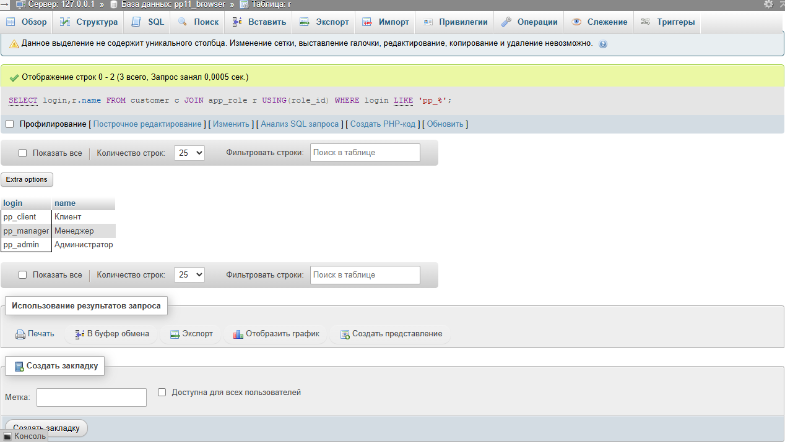
Реальный результат в phpMyAdmin. Учебные роли пользователей приложения после миграции. Это customer/app_role, а не список учётных записей сервера.Справочник 18
Разрешения для уже созданных локальных учётных записей
1
Где и зачем
Создать или заменить файл с начала: database/05_access.sql. Фрагмент 1 из 1 этого файла. GRANT выдаёт EXECUTE отдельной процедуре, а не все права на БД. login получает только вход/каталог/размеры, клиент — дополнительно подтверждение, менеджер — операции со списком и целым заказом, администратор — ещё строки и дату. Для своего варианта заменять pp11_demo и четыре имени пользователей согласованно.
2
Код: 05_access.sql
-- === Разрешения для уже созданных локальных учётных записей
-- Выполняйте администратором; замените pp11_demo на имя своей учебной копии.
-- Пароли задавайте в phpMyAdmin, а не в этом файле или репозитории.
GRANT EXECUTE ON PROCEDURE pp11_demo.pp_login TO 'pp11_demo_login'@'localhost';
GRANT EXECUTE ON PROCEDURE pp11_demo.pp_catalog TO 'pp11_demo_login'@'localhost';
GRANT EXECUTE ON PROCEDURE pp11_demo.pp_sizes TO 'pp11_demo_login'@'localhost';
GRANT EXECUTE ON PROCEDURE pp11_demo.pp_catalog TO 'pp11_demo_client'@'localhost';
GRANT EXECUTE ON PROCEDURE pp11_demo.pp_sizes TO 'pp11_demo_client'@'localhost';
GRANT EXECUTE ON PROCEDURE pp11_demo.pp_checkout TO 'pp11_demo_client'@'localhost';
GRANT EXECUTE ON PROCEDURE pp11_demo.pp_catalog TO 'pp11_demo_manager'@'localhost';
GRANT EXECUTE ON PROCEDURE pp11_demo.pp_sizes TO 'pp11_demo_manager'@'localhost';
GRANT EXECUTE ON PROCEDURE pp11_demo.pp_checkout TO 'pp11_demo_manager'@'localhost';
GRANT EXECUTE ON PROCEDURE pp11_demo.pp_customers TO 'pp11_demo_manager'@'localhost';
GRANT EXECUTE ON PROCEDURE pp11_demo.pp_orders TO 'pp11_demo_manager'@'localhost';
GRANT EXECUTE ON PROCEDURE pp11_demo.pp_lines TO 'pp11_demo_manager'@'localhost';
GRANT EXECUTE ON PROCEDURE pp11_demo.pp_delete_order TO 'pp11_demo_manager'@'localhost';
GRANT EXECUTE ON PROCEDURE pp11_demo.pp_catalog TO 'pp11_demo_admin'@'localhost';
GRANT EXECUTE ON PROCEDURE pp11_demo.pp_sizes TO 'pp11_demo_admin'@'localhost';
GRANT EXECUTE ON PROCEDURE pp11_demo.pp_checkout TO 'pp11_demo_admin'@'localhost';
GRANT EXECUTE ON PROCEDURE pp11_demo.pp_customers TO 'pp11_demo_admin'@'localhost';
GRANT EXECUTE ON PROCEDURE pp11_demo.pp_orders TO 'pp11_demo_admin'@'localhost';
GRANT EXECUTE ON PROCEDURE pp11_demo.pp_lines TO 'pp11_demo_admin'@'localhost';
GRANT EXECUTE ON PROCEDURE pp11_demo.pp_delete_order TO 'pp11_demo_admin'@'localhost';
GRANT EXECUTE ON PROCEDURE pp11_demo.pp_delete_line TO 'pp11_demo_admin'@'localhost';
GRANT EXECUTE ON PROCEDURE pp11_demo.pp_change_date TO 'pp11_demo_admin'@'localhost';
3
Сохранение и проверка
После создания четырёх учётных записей и выполнения файла войти в phpMyAdmin под pp11_demo_client: каталог и pp_checkout разрешены, SELECT FROM customer и UPDATE stock_item запрещены. Под менеджером pp_change_date запрещена.
Справочник 19
Создание и открытие проекта в Visual Studio
Готовый компонент. Изучить и проверить интеграцию; создавать повторно не требуется.
1
Начать с заготовки
Скачать пустой WPF-проект и ресурсы — прямая ссылка под заголовком этого раздела — распаковать архив в свою рабочую папку. В Visual Studio 2026: Файл → Открыть → Проект или решение → starter/ShopDb.csproj. В Обозревателе решений должны быть App.xaml и MainWindow.xaml. Заготовка уже содержит ресурсы магазина «Пара» и ссылку MySqlConnector 2.6.1.
2
Если создаёте проект самостоятельно
На стартовом экране выбрать Создание проекта. Ввести WPF, язык C#, шаблон Приложение WPF, название ShopDb, платформа .NET 10.0. На этой основе пространство имён будет ShopDb. Добавить папки Assets и Assets/Images через проект → Добавить → Новая папка; из заготовки через Добавить → Существующий элемент добавить logo.png, shop.ico, picture.png и изображения моделей. Для logo.png и shop.ico в Свойствах задать Действие при сборке: Ресурс — они загружаются из XAML. Для picture.png и Images задать Действие при сборке: Нет, Копировать в выходной каталог: Копировать, если новее — они читаются по пути файла. Эти настройки также приведены в csproj.
3
Зависимость
Правой кнопкой на проекте → Управление пакетами NuGet → Установлено: проверить MySqlConnector 2.6.1. В проверенной среде он уже доступен. Если в учебной среде пакета нет, подготовить его с преподавателем до запуска; затем Обзор → MySqlConnector → версия 2.5.0 → Установить. В .csproj PackageReference ниже фиксирует версию.
4
Проверка заготовки
Сборка → Собрать решение. Затем Ctrl+F5: появляется пустое окно с текстом «Создать приложение по методичке». Закрыть только это окно. Это подтверждает WPF и ресурсы до подключения БД. Файлы bin и obj созданы автоматически и не редактируются.
5
Документация
Открыть справочник ссылок на документацию под заголовком этого раздела. Руководство Microsoft поясняет шаблон WPF и элементы среды; руководство MySqlConnector объясняет Connection, Command и параметры.
Справочник 20
Настройка файла проекта
Готовый компонент. Изучить и проверить интеграцию; создавать повторно не требуется.
1
Где и зачем
Создать или заменить файл с начала: app/ShopDb.csproj. Фрагмент 1 из 1 этого файла. Правой кнопкой на проекте → Изменить файл проекта. TargetFramework задаёт .NET 10 для Windows, UseWPF включает WPF, ApplicationIcon указывает иконку. None Update копирует локальную конфигурацию и ресурсы при сборке. PackageReference подключает установленный драйвер. Сохранить и проверить сборку пустой заготовки.
Сохранить файл. Сборка после завершения связанного блока должна пройти без ошибок.
Справочник 21
Общие ресурсы и оформление окон
Готовый компонент. Изучить и проверить интеграцию; создавать повторно не требуется.
1
Где и зачем
Создать или заменить файл с начала: app/App.xaml. Фрагмент 1 из 1 этого файла. В Обозревателе решений открыть App.xaml; заменить ресурсы приложения. Window задаёт Calibri, основной белый фон, Button — акцент #70B2AF, DataGrid — режим чтения. StartupUri открывает MainWindow. Дополнительный фон #D2F6E7 используется в окнах. Эти настройки обеспечивают единое оформление окон приложения.
Сохранить файл. Сборка после завершения связанного блока должна пройти без ошибок.
Справочник 22
Запуск приложения
Готовый компонент. Изучить и проверить интеграцию; создавать повторно не требуется.
1
Где и зачем
Создать или заменить файл с начала: app/App.xaml.cs. Фрагмент 1 из 1 этого файла. Открыть App.xaml.cs под App.xaml. Сохраняется стандартный наследник Application, который связывает класс ShopDb.App с XAML. Никакого ручного изменения сгенерированного InitializeComponent здесь не нужно.
2
Код: App.xaml.cs
using System.Windows;
namespace ShopDb;
public partial class App : Application
{
}
3
Сохранение и проверка
Сохранить файл. Сборка после завершения связанного блока должна пройти без ошибок.
Справочник 23
Локальные настройки и проверка ресурсов
Готовый компонент. Изучить и проверить интеграцию; создавать повторно не требуется.
1
Создать settings.local.json
В Обозревателе решений правой кнопкой по settings.example.json → Копировать, правой кнопкой по проекту → Вставить, переименовать копию в settings.local.json. Ввести реальные локальные пароли четырёх учётных записей СУБД. Для своей БД заменить имя pp11_demo в Database и User ID, сохраняя требуемые суффиксы. Company — название вашей организации. settings.example.json оставить с подсказками без паролей.
2
Проверить копирование
Выделить settings.local.json → Свойства → Копировать в выходной каталог: Копировать, если новее. Это также задано в csproj. После сборки открыть папку bin/Debug/net10.0-windows: там должны быть settings.local.json и Assets. Не добавлять локальную конфигурацию в публичный репозиторий. При ошибке JSON проверить запятые и двойные кавычки.
3
Имя файла изображения
Поле image_path исходной БД указывает Images/имя.png. Product берёт имя файла и ищет его только в Assets/Images. Если изображение отсутствует, используется picture.png; оригинальное изображение не рисовать заново. Файл logo.png из ресурсов показывается с сохранением пропорций, shop.ico задаёт иконку.
Справочник 24
Образец локальных настроек
Готовый компонент. Изучить и проверить интеграцию; создавать повторно не требуется.
1
Где и зачем
Создать или заменить файл с начала: app/settings.example.json. Фрагмент 1 из 1 этого файла. Образец JSON. Заполните именно копию settings.local.json. Company влияет на заголовки окон; четыре подключения соответствуют ключам login/client/manager/admin. Значения ЗАМЕНИТЕ_ЛОКАЛЬНО являются подсказками, а не паролями. После заполнения проверить копирование файла при сборке.
Сохранить файл. Сборка после завершения связанного блока должна пройти без ошибок.
Справочник 25
Настройки и пользователь приложения
Готовый компонент. Изучить и проверить интеграцию; создавать повторно не требуется.
1
Где и зачем
Создать или заменить файл с начала: app/Models.cs. Фрагмент 1 из 2 этого файла. Settings хранит название компании и подключения по ролям. AppUser представляет именно пользователя торговой системы; IsStaff и IsAdmin вычисляются из его роли. Ключ login означает гостевое подключение и поиск логина, а не роль клиента.
2
Код: Models.cs
using System.IO;
namespace ShopDb;
// === Настройки и пользователь приложения
public sealed class Settings
{
public string Company { get; set; } = "Магазин «Пара»";
public Dictionary<string, string> Connections { get; set; } = new();
}
public sealed record AppUser(long Id, string Fio, string Role)
{
public bool IsStaff => Role is "manager" or "admin";
public bool IsAdmin => Role == "admin";
}
3
Сохранение и проверка
Создать Models.cs через контекстное меню проекта → Добавить → Класс. Заменить автоматически созданный класс указанным фрагментом, затем дописать остальные типы в этот же файл. Сборка после полного Models.cs не требует БД.
Справочник 26
Модель каталога и товарная позиция
Готовый компонент. Изучить и проверить интеграцию; создавать повторно не требуется.
1
Где и зачем
Дописать в конец текущего файла: app/Models.cs. Фрагмент 2 из 2 этого файла. Product содержит поля модели, суммарный остаток и две цены. StockLabel и LowStock напрямую выражают границы задания. Picture берёт только имя файла и ищет его в Assets/Images: путь из БД не даёт читать произвольные файлы. SizeItem относится к сочетанию модели и размера, CartLine сохраняет предварительную цену корзины.
2
Код: Models.cs
// === Модель каталога и товарная позиция
public sealed record Product(long Id, string Name, long CategoryId, string Category,
string Manufacturer, string Composition, string Description, string ImagePath,
decimal Price, decimal FinalPrice, int Available)
{
public string StockLabel => Available > 5 ? "много" : "мало";
public bool LowStock => Available <= 3;
public string Picture
{
get
{
string path = Path.Combine(AppContext.BaseDirectory, "Assets", "Images",
Path.GetFileName(ImagePath));
return File.Exists(path) ? path : Path.Combine(AppContext.BaseDirectory,
"Assets", "picture.png");
}
}
}
public sealed record SizeItem(long ItemId, string Label, int Available)
{
public string Display => $"{Label} — доступно {Available}";
}
public sealed record Choice(long Id, string Name);
public sealed record CartLine(long ItemId, string Position, int Quantity, decimal Price)
{
public decimal Total => Quantity * Price;
}
3
Сохранение и проверка
Закончить Models.cs и сохранить. Сборка → Собрать решение. Для отсутствующего image_path должен выбираться Assets/picture.png. Изменение Quantity создаёт новую CartLine, чтобы обновить отображение.
Справочник 27
Локальная конфигурация и параметризованная команда
Готовый компонент. Изучить и проверить интеграцию; создавать повторно не требуется.
1
Где и зачем
Создать или заменить файл с начала: app/Repository.cs. Фрагмент 1 из 4 этого файла. Создать Repository.cs через Добавить → Класс. Settings читается из каталога исполняемого приложения. Query открывает новое соединение выбранной роли; await не блокирует ожиданием серверного ответа интерфейс. AddWithValue передаёт значения отдельно от SQL, поэтому введённая кавычка не превращается в часть команды. DataTable превращает результат CALL в таблицу данных.
2
Код: Repository.cs
using System.Data;
using System.IO;
using System.Text.Json;
using MySqlConnector;
namespace ShopDb;
public sealed class Repository
{
// === Локальная конфигурация и параметризованная команда
public Settings Settings { get; }
public AppUser? User { get; private set; }
private string Role => User?.Role ?? "login";
public Repository()
{
string path = Path.Combine(AppContext.BaseDirectory, "settings.local.json");
Settings = JsonSerializer.Deserialize<Settings>(File.ReadAllText(path))
?? throw new InvalidOperationException("Не заполнены настройки подключения.");
foreach (string key in new[] { "login", "client", "manager", "admin" })
{
if (!Settings.Connections.ContainsKey(key))
{
throw new InvalidOperationException($"В настройках отсутствует подключение {key}.");
}
}
}
private async Task<DataTable> Query(string sql, params (string Name, object Value)[] values)
{
await using var connection = new MySqlConnection(Settings.Connections[Role]);
await connection.OpenAsync();
await using var command = new MySqlCommand(sql, connection);
command.CommandTimeout = 15;
foreach (var value in values)
{
command.Parameters.AddWithValue(value.Name, value.Value);
}
await using var reader = await command.ExecuteReaderAsync();
var table = new DataTable();
table.Load(reader);
return table;
}
3
Сохранение и проверка
Дописать остальные части класса перед финальной закрывающей скобкой. На этой части класс ещё не завершён. После полного файла сборка подтверждает типы, а подключение проверяется при запуске каталога.
Справочник 28
Вход и чтение каталога
Готовый компонент. Изучить и проверить интеграцию; создавать повторно не требуется.
1
Где и зачем
Дописать в конец текущего файла: app/Repository.cs. Фрагмент 2 из 4 этого файла. Login сначала сбрасывает старого пользователя, выполняет pp_login гостевым подключением и проверяет ровно одну строку. Catalog и Sizes преобразуют DataRow в понятные типы модели; цена приходит из SQL, отдельно в C# алгоритм скидки не дублируется.
2
Код: Repository.cs
// === Вход и чтение каталога
public async Task Login(string login)
{
User = null;
DataTable table = await Query("CALL pp_login(@login)", ("@login", login.Trim()));
if (table.Rows.Count != 1)
{
throw new InvalidOperationException("Логин не найден. Проверьте написание по данным своего варианта.");
}
DataRow row = table.Rows[0];
User = new AppUser(Convert.ToInt64(row["customer_id"]),
Convert.ToString(row["fio"])!, Convert.ToString(row["role_name"])!);
}
public void Logout() => User = null;
public async Task<List<Product>> Catalog()
{
DataTable table = await Query("CALL pp_catalog(@date)", ("@date", DateTime.Today));
return table.Rows.Cast<DataRow>().Select(row => new Product(
Convert.ToInt64(row["product_id"]), (string)row["name"],
Convert.ToInt64(row["category_id"]), (string)row["category"],
(string)row["manufacturer"], (string)row["composition"],
(string)row["description"], (string)row["image_path"],
(decimal)row["price"], (decimal)row["final_price"],
Convert.ToInt32(row["available"]))).ToList();
}
public async Task<List<SizeItem>> Sizes(long product)
{
DataTable table = await Query("CALL pp_sizes(@product)", ("@product", product));
return table.Rows.Cast<DataRow>().Select(row => new SizeItem(
Convert.ToInt64(row["item_id"]), (string)row["label"],
Convert.ToInt32(row["available"]))).ToList();
}
3
Сохранение и проверка
После полного Repository и подключения окна войти по pp_client; ввод логина вида pp_client' OR 1=1 -- не должен давать вход. В каталоге сравнить количество моделей и цены с CALL pp_catalog(CURDATE()).
Справочник 29
Заказ клиента и выбор клиента сотрудником
1
Где и зачем
Дописать в конец текущего файла: app/Repository.cs. Фрагмент 3 из 4 этого файла. Actor требует входа. Customers для клиента возвращает только самого пользователя, сотруднику вызывает разрешённую процедуру. Checkout сериализует идентификаторы и количества, но не доверяет переданной из UI цене: её вычисляет сервер. Один и тот же requestKey используется при повторе неизвестного сетевого результата.
2
Код: Repository.cs
// === Заказ клиента и выбор клиента сотрудником
private AppUser Actor => User ?? throw new InvalidOperationException("Сначала войдите по логину.");
private void Staff()
{
if (!Actor.IsStaff)
{
throw new InvalidOperationException("Список заказов доступен менеджеру и администратору.");
}
}
public async Task<List<Choice>> Customers()
{
if (!Actor.IsStaff)
{
return new List<Choice> { new(Actor.Id, Actor.Fio) };
}
DataTable table = await Query("CALL pp_customers(@actor)", ("@actor", Actor.Id));
return table.Rows.Cast<DataRow>().Select(row => new Choice(
Convert.ToInt64(row["customer_id"]), (string)row["fio"])).ToList();
}
public async Task<long> Checkout(long customer, IEnumerable<CartLine> lines, string key)
{
string json = JsonSerializer.Serialize(lines.Select(line => new
{
item_id = line.ItemId,
quantity = line.Quantity
}));
DataTable table = await Query("CALL pp_checkout(@actor,@customer,@lines,@key)",
("@actor", Actor.Id), ("@customer", customer), ("@lines", json), ("@key", key));
return Convert.ToInt64(table.Rows[0]["created_order"]);
}
3
Сохранение и проверка
После полного решения сравнить customer_id сохранённого заказа с выбранным клиентом; у клиента выбор заблокирован, менеджеру доступны учебные пользователи. Не помещать START TRANSACTION вокруг CALL: процедура сама владеет транзакцией.
Справочник 30
Управление заказами через ограниченные процедуры
1
Где и зачем
Дописать в конец текущего файла: app/Repository.cs. Фрагмент 4 из 4 этого файла. Staff и Admin защищают вход в методы до запроса. SQL-процедура и права фактического подключения проверяют действие повторно. Orders/Lines возвращают таблицы для DataGrid; Delete/ChangeDate не редактируют таблицы напрямую.
2
Код: Repository.cs
// === Управление заказами через ограниченные процедуры
public Task<DataTable> Orders()
{
Staff();
return Query("CALL pp_orders(@actor)", ("@actor", Actor.Id));
}
public Task<DataTable> Lines(long order)
{
Staff();
return Query("CALL pp_lines(@actor,@order)", ("@actor", Actor.Id), ("@order", order));
}
public Task<DataTable> DeleteOrder(long order)
{
Staff();
return Query("CALL pp_delete_order(@actor,@order)", ("@actor", Actor.Id), ("@order", order));
}
private void Admin()
{
if (!Actor.IsAdmin)
{
throw new InvalidOperationException("Это действие доступно только администратору.");
}
}
public Task<DataTable> DeleteLine(long order, long item)
{
Admin();
return Query("CALL pp_delete_line(@actor,@order,@item)",
("@actor", Actor.Id), ("@order", order), ("@item", item));
}
public Task<DataTable> ChangeDate(long order, DateTime date)
{
Admin();
return Query("CALL pp_change_date(@actor,@order,@date)",
("@actor", Actor.Id), ("@order", order), ("@date", date));
}
}
3
Сохранение и проверка
Закончить Repository.cs. Сборка должна пройти вместе с Models.cs. На поздней проверке нажатию удалить должна соответствовать одна вызванная процедура; запрет для менеджера должен сохраняться и вне интерфейса.
Справочник 31
Понятное сообщение без строки подключения
1
Где и зачем
Создать или заменить файл с начала: app/Ui.cs. Фрагмент 1 из 1 этого файла. Создать Ui.cs. Run выполняет асинхронное действие и переводит характерные SQL-ошибки в понятные инструкции. Пароль, серверная строка подключения и полный технический текст ошибки не показываются. Confirm использует предупреждение и выбор Да/Нет до удаления.
2
Код: Ui.cs
using System.Windows;
using MySqlConnector;
namespace ShopDb;
public static class Ui
{
// === Понятное сообщение без строки подключения
public static async Task Run(Window owner, Func<Task> action)
{
try
{
await action();
}
catch (MySqlException error)
{
string text = error.Message.Contains("NOT_ENOUGH_STOCK")
? "Остаток изменился. Обновите каталог и уменьшите количество в заказе."
: error.Message.Contains("ROLE_DENIED") || error.Number == 1370
? "Действие запрещено для этой роли. Войдите с разрешённым логином."
: error.Message.Contains("NOT_FOUND")
? "Заказ или строка уже удалены. Обновите список заказов."
: error.Message.Contains("INVALID_DATE")
? "Дата не должна находиться в будущем. Выберите корректную дату."
: error.Number == 1213 || error.Number == 1205
? "Данные сейчас изменяет другой пользователь. Повторите операцию с тем же заказом."
: "Не удалось выполнить операцию с БД. Проверьте запуск MySQL, имя БД и локальные настройки. При неясном результате подтверждения повторите запрос, не изменяя корзину.";
MessageBox.Show(owner, text, "Ошибка операции", MessageBoxButton.OK, MessageBoxImage.Error);
}
catch (Exception error)
{
string text = error is InvalidOperationException or ArgumentException
? error.Message
: "Проверьте settings.local.json и файлы ресурсов, затем повторите запуск.";
MessageBox.Show(owner, text, "Ошибка данных", MessageBoxButton.OK, MessageBoxImage.Error);
}
}
public static bool Confirm(Window owner, string text) => MessageBox.Show(owner, text,
"Подтверждение удаления", MessageBoxButton.YesNo, MessageBoxImage.Warning) == MessageBoxResult.Yes;
}
3
Сохранение и проверка
После полного Ui.cs выполнить сборку. В итоговом приложении ошибка количества и ошибка БД имеют разные заголовки/пиктограммы и объясняют действие пользователя.
Справочник 32
Данные модели, размеры и количество
1
Где и зачем
Создать или заменить файл с начала: app/ProductWindow.xaml. Фрагмент 1 из 1 этого файла. Добавить окно WPF ProductWindow через проект → Добавить → Новый элемент → Окно (WPF). В XAML задать имена ProductImage, NameText, DetailsText, PriceText, SizesText, SizeBox, QuantityBox и AddButton. Размерный список заполняется из БД; значение количества сначала 1. ScrollViewer сохраняет читаемость длинного описания. Кнопка Назад закрывает карточку без добавления.
Заменять XAML окна целиком указанными частями по порядку. Обработчики подключены атрибутами Click и Loaded: код будет добавлен следующим. Пока XAML не закрыт и нет обработчиков, сборка ожидаемо не готова.
Справочник 33
Актуальные данные карточки
1
Где и зачем
Создать или заменить файл с начала: app/ProductWindow.xaml.cs. Фрагмент 1 из 2 этого файла. Открыть ProductWindow.xaml.cs через стрелку возле окна в Обозревателе решений. Заменить класс и конструктор первым фрагментом. MainWindow передаст свежую Product. Loaded получает размеры повторно, показывает весь ряд и оставляет для покупки только доступные. До загрузки AddButton выключена.
2
Код: ProductWindow.xaml.cs
using System.Windows;
using System.Windows.Media.Imaging;
namespace ShopDb;
public partial class ProductWindow : Window
{
// === Актуальные данные карточки
private readonly Repository repository;
private readonly Product product;
public CartLine? Result { get; private set; }
public ProductWindow(Repository repository, Product product)
{
InitializeComponent();
this.repository = repository;
this.product = product;
Title = repository.Settings.Company + " — " + product.Name;
NameText.Text = product.Name;
DetailsText.Text = $"Категория: {product.Category}\nПроизводство: {product.Manufacturer}\nСостав: {product.Composition}\nОписание: {product.Description}";
PriceText.Text = $"Цена со скидкой: {product.FinalPrice:N2} ₽";
ProductImage.Source = new BitmapImage(new Uri(product.Picture));
}
private async void LoadedWindow(object sender, RoutedEventArgs e) => await Ui.Run(this, async () =>
{
List<SizeItem> sizes = await repository.Sizes(product.Id);
SizesText.Text = "Размерный ряд: " + string.Join(", ", sizes.Select(s => s.Label));
SizeBox.ItemsSource = sizes.Where(s => s.Available > 0).ToList();
SizeBox.SelectedIndex = 0;
AddButton.IsEnabled = repository.User is not null && SizeBox.Items.Count > 0;
});
3
Сохранение и проверка
Дописать обработчики следующей части. В готовом окне проверять логотип/иконку главной формы отдельно, изображение карточки — оригинальным файлом или заглушкой.
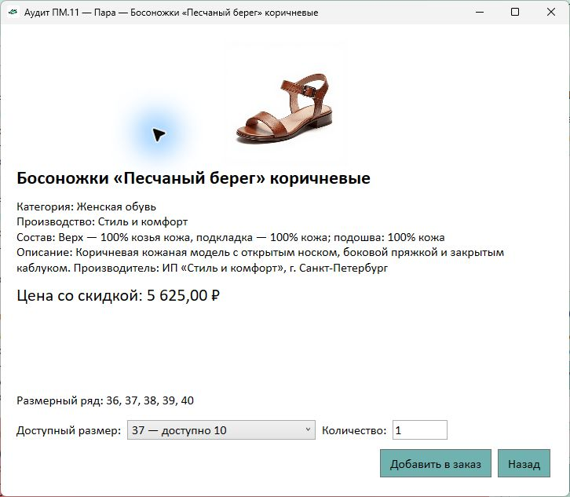
Реальный результат в WPF. Реальная карточка выбранной модели: изображение, описание, цена со скидкой, размерный ряд и доступный остаток. Количество проверяется до добавления в корзину.Справочник 34
Проверка выбора до изменения корзины
1
Где и зачем
Дописать в конец текущего файла: app/ProductWindow.xaml.cs. Фрагмент 2 из 2 этого файла. TryParse отказывает буквам, дроби и отрицательному количеству; сравнение с доступным остатком защищает от очевидно невозможного выбора. Result передаёт позицию вызывающему окну, а DialogResult закрывает карточку. Сама карточка не создаёт заказ в БД.
2
Код: ProductWindow.xaml.cs
// === Проверка выбора до изменения корзины
private void AddClick(object sender, RoutedEventArgs e)
{
if (repository.User is null || SizeBox.SelectedItem is not SizeItem size)
{
return;
}
if (!int.TryParse(QuantityBox.Text, out int quantity) || quantity < 1 || quantity > size.Available)
{
MessageBox.Show(this, $"Введите целое количество от 1 до {size.Available}.",
"Ошибка количества", MessageBoxButton.OK, MessageBoxImage.Error);
QuantityBox.Focus();
return;
}
Result = new CartLine(size.ItemId, $"{product.Name} / {size.Label}", quantity, product.FinalPrice);
DialogResult = true;
}
private void BackClick(object sender, RoutedEventArgs e) => DialogResult = false;
}
3
Сохранение и проверка
Окно закончено: сборка должна пройти вместе с Models, Repository и Ui. Позднее в карточке ввести 0, буквы и количество больше остатка: сообщение появится, строки БД не добавятся. Назад вернёт к каталогу.
Справочник 35
Список заказов и состав выбранного
1
Где и зачем
Создать или заменить файл с начала: app/OrdersWindow.xaml. Фрагмент 1 из 1 этого файла. Добавить OrdersWindow как Окно (WPF), заменить XAML приведёнными частями. Верхний DataGrid — заголовки, нижний — состав. Binding обращается к именам колонок результата SQL. DatePicker и кнопки изменения изначально выключены. Конструктор включает дату только администратору; удаление строки становится доступным администратору после загрузки состава выбранного заказа. IsReadOnly не позволяет редактировать таблицу произвольным вводом.
Добавить связанный код следующим. Сетка по звёздным строкам распределяет свободное место; Width=* у ФИО и позиции позволяет помещать длинные названия. Окончательная проверка выполняется под двумя ролями.
Справочник 36
Доступ сотрудника и загрузка списка
1
Где и зачем
Создать или заменить файл с начала: app/OrdersWindow.xaml.cs. Фрагмент 1 из 2 этого файла. Заменить код OrdersWindow.xaml.cs. ClearLines сразу снимает выбор нижней строки, очищает таблицу, выключает удаление и увеличивает loadVersion. Reload вызывает её до ожидания списка. OrderChanged запоминает версию запроса и номер заказа; после await принимает ответ только при совпадении обоих. Это защищает и возврат к прежнему заказу, пока первый запрос ещё выполняется. loadedOrder хранит номер заказа, чей состав уже загружен; кнопка удаления включается только после загрузки и только администратору. При снятии выбора состав очищается, дата сбрасывается. Номер извлекается из выбранной строки. В начале окна кнопка удаления выключена даже администратору: строки ещё не загружены.
2
Код: OrdersWindow.xaml.cs
using System.Data;
using System.Windows;
using System.Windows.Controls;
namespace ShopDb;
public partial class OrdersWindow : Window
{
// === Доступ сотрудника и загрузка списка
private readonly Repository repository;
private bool busy;
private long? loadedOrder;
private int loadVersion;
public OrdersWindow(Repository repository)
{
InitializeComponent();
this.repository = repository;
Title = repository.Settings.Company + " — Заказы";
UserText.Text = repository.User?.Fio;
ChangeDateButton.IsEnabled = repository.User?.IsAdmin == true;
DeleteLineButton.IsEnabled = false;
OrderDate.IsEnabled = repository.User?.IsAdmin == true;
}
private async void LoadedWindow(object sender, RoutedEventArgs e) => await Ui.Run(this, Reload);
private long SelectedOrder => OrderGrid.SelectedItem is DataRowView row
? Convert.ToInt64(row["order_id"])
: throw new InvalidOperationException("Выберите заказ в верхней таблице.");
private async Task Reload()
{
ClearLines();
OrderGrid.ItemsSource = (await repository.Orders()).DefaultView;
}
private void ClearLines()
{
loadVersion++;
loadedOrder = null;
LineGrid.SelectedItem = null;
LineGrid.ItemsSource = null;
DeleteLineButton.IsEnabled = false;
}
private async void OrderChanged(object sender, SelectionChangedEventArgs e) => await Ui.Run(this, async () =>
{
ClearLines();
int version = loadVersion;
if (OrderGrid.SelectedItem is DataRowView row)
{
long id = Convert.ToInt64(row["order_id"]);
OrderDate.SelectedDate = Convert.ToDateTime(row["ordered_at"]);
DataTable lines = await repository.Lines(id);
if (version == loadVersion && OrderGrid.SelectedItem is DataRowView current && Convert.ToInt64(current["order_id"]) == id)
{
LineGrid.ItemsSource = lines.DefaultView;
loadedOrder = id;
DeleteLineButton.IsEnabled = repository.User?.IsAdmin == true;
}
}
else
{
OrderDate.SelectedDate = null;
}
});
3
Сохранение и проверка
Дописать вторую часть класса. В готовом приложении быстро переключать заказы, в том числе A → B → A: до ответа нижняя таблица пуста и удаление выключено, после ответа состав соответствует верхнему выбору. При снятии выбора состав тоже пуст. Повторить проверку при задержке БД в отдельной тестовой копии; старый ответ не должен включать удаление.
Справочник 37
Подтверждение необратимых действий и обновление
1
Где и зачем
Дописать в конец текущего файла: app/OrdersWindow.xaml.cs. Фрагмент 2 из 2 этого файла. Mutate блокирует повторное нажатие на период изменения и возвращает управление в finally. DeleteLineClick проверяет loadedOrder == SelectedOrder до чтения item_id: номер заказа и товар должны принадлежать одному загруженному составу. DeleteOrder и DeleteLine предупреждают о последствиях. После CALL перечитывается список; NewClick возвращает к каталогу для выбора модели и клиента. Изменение даты сохраняет выбранный календарный день с временем 00:00.
2
Код: OrdersWindow.xaml.cs
// === Подтверждение необратимых действий и обновление
private async Task Mutate(Func<Task> action)
{
if (busy)
{
return;
}
busy = true;
IsEnabled = false;
try
{
await Ui.Run(this, action);
}
finally
{
IsEnabled = true;
busy = false;
}
}
private async void DeleteOrderClick(object sender, RoutedEventArgs e) => await Mutate(async () =>
{
long id = SelectedOrder;
if (Ui.Confirm(this, $"Удалить заказ №{id}? Товары вернутся в остаток, запись заказа будет удалена."))
{
await repository.DeleteOrder(id);
await Reload();
}
});
private async void DeleteLineClick(object sender, RoutedEventArgs e) => await Mutate(async () =>
{
long order = SelectedOrder;
if (loadedOrder != order)
{
throw new InvalidOperationException("Дождитесь загрузки состава выбранного заказа.");
}
if (LineGrid.SelectedItem is not DataRowView row)
{
throw new InvalidOperationException("Выберите товарную позицию в нижней таблице.");
}
long item = Convert.ToInt64(row["item_id"]);
if (Ui.Confirm(this, "Удалить выбранную позицию и вернуть её количество в остаток? Если она последняя, заказ будет удалён."))
{
await repository.DeleteLine(order, item);
await Reload();
}
});
private async void ChangeDateClick(object sender, RoutedEventArgs e) => await Mutate(async () =>
{
long order = SelectedOrder;
DateTime date = OrderDate.SelectedDate ?? throw new InvalidOperationException("Выберите дату заказа.");
await repository.ChangeDate(order, date);
await Reload();
});
private async void RefreshClick(object sender, RoutedEventArgs e) => await Ui.Run(this, Reload);
private void NewClick(object sender, RoutedEventArgs e) => DialogResult = true;
private void BackClick(object sender, RoutedEventArgs e) => DialogResult = false;
}
3
Сохранение и проверка
Окно закончено, выполнить сборку. Для проверки нужны созданные в демонстрации заказы: отказ в предупреждении ничего не меняет; подтверждение возвращает остаток. После удаления последней позиции пустой заказ исчезает.
Справочник 38
Верхняя панель входа
Готовый компонент. Изучить и проверить интеграцию; создавать повторно не требуется.
1
Где и зачем
Создать или заменить файл с начала: app/MainWindow.xaml. Фрагмент 1 из 4 этого файла. Открыть MainWindow.xaml в заготовке. Заменить весь исходный XAML частями ниже. Grid выделяет отдельные строки, DockPanel располагает логотип, ФИО и кнопки. Image использует Stretch=Uniform и сохраняет пропорции ресурса. LoginBox и LoginButton вводят логин; LogoutButton и OrdersButton изначально скрыты.
Продолжать XAML до закрывающего Window; связанные обработчики будут добавлены после полной разметки. Не изменять автоматически создаваемые файлы obj и код дизайнера.
Справочник 39
Совместные поиск, фильтр и сортировка
Готовый компонент. Изучить и проверить интеграцию; создавать повторно не требуется.
1
Где и зачем
Дописать в конец текущего файла: app/MainWindow.xaml. Фрагмент 2 из 4 этого файла. Имена SearchBox, CategoryBox, SortBox связывают элементы с кодом. TextChanged и SelectionChanged вызывают одну ApplyFilter; отдельной кнопки поиска нет. FilterPanel выключена для гостя. В ComboBox категорий код добавит Все категории первым элементом.
Фрагмент продолжается внутри Grid. После полного окна проверять три условия одновременно: фильтр не сбрасывает поиск, поиск не сбрасывает сортировку, Все категории снимает только категорию.
Справочник 40
Карточка модели из базы
1
Где и зачем
Дописать в конец текущего файла: app/MainWindow.xaml. Фрагмент 3 из 4 этого файла. DataTemplate описывает карточку каждой Product. Binding обращается к её свойствам; триггер LowStock даёт #ff8080 при общем остатке ≤3. Цена и исходная цена различаются подписями. Двойной щелчок по элементу открывает его карточку; нижняя кнопка предоставляет то же действие.
Сохранить следующую часть в том же XAML. После заполнения окна проверять границы 3/4 и 5/6 на контролируемом наборе, а не только цвет первого товара.
Справочник 41
Корзина до подтверждения хранится в памяти
1
Где и зачем
Дописать в конец текущего файла: app/MainWindow.xaml. Фрагмент 4 из 4 этого файла. CartList привязан к ObservableCollection. CustomerBox показывает владельца заказа; для клиента он заблокирован. CartQuantity меняет выбранную позицию через кнопку. Подтверждение отдельно от добавления; сумма названа предварительной, потому что окончательные цена и остаток проверяются на сервере.
Закончить MainWindow.xaml и сохранить. Вводить код обработчиков будем в MainWindow.xaml.cs. Пока их нет, ошибки имён Click ожидаемы; следующий завершённый блок устраняет их.
Справочник 42
Состояние окна и первоначальная загрузка
Готовый компонент. Изучить и проверить интеграцию; создавать повторно не требуется.
1
Где и зачем
Создать или заменить файл с начала: app/MainWindow.xaml.cs. Фрагмент 1 из 5 этого файла. Заменить MainWindow.xaml.cs, начиная с импортов и объявления класса. InitializeComponent создаёт элементы XAML; LoadedWindow читает конфигурацию и каталог. RefreshCatalog сохраняет выбранную категорию и заново строит список; её идентификатор хранится отдельно от подписи.
2
Код: MainWindow.xaml.cs
using System.Collections.ObjectModel;
using System.Windows;
using System.Windows.Controls;
using System.Windows.Input;
using MySqlConnector;
namespace ShopDb;
public partial class MainWindow : Window
{
// === Состояние окна и первоначальная загрузка
private Repository? repository;
private List<Product> products = new();
private readonly ObservableCollection<CartLine> cart = new();
private string requestKey = Guid.NewGuid().ToString();
private bool pending;
private bool busy;
public MainWindow()
{
InitializeComponent();
CartList.ItemsSource = cart;
}
private async void LoadedWindow(object sender, RoutedEventArgs e) => await Ui.Run(this, async () =>
{
repository = new Repository();
Title = repository.Settings.Company + " — Каталог";
await RefreshCatalog();
});
private Repository Repo => repository ?? throw new InvalidOperationException("Проверьте настройки и перезапустите приложение.");
private async Task RefreshCatalog()
{
products = await Repo.Catalog();
long selected = (CategoryBox.SelectedItem as Choice)?.Id ?? 0;
CategoryBox.ItemsSource = new[] { new Choice(0, "Все категории") }
.Concat(products.Select(p => new Choice(p.CategoryId, p.Category)).Distinct()).ToList();
CategoryBox.SelectedItem = ((List<Choice>)CategoryBox.ItemsSource)
.FirstOrDefault(c => c.Id == selected) ?? ((List<Choice>)CategoryBox.ItemsSource)[0];
ApplyFilter();
}
3
Сохранение и проверка
Добавить остальные части внутри того же класса по порядку. Заготовка и итоговый проект используют одинаковое пространство имён ShopDb. Пока все обработчики не добавлены, окончательная сборка ещё не готова.
Справочник 43
Фильтрация и сортировка одной выборки
Готовый компонент. Изучить и проверить интеграцию; создавать повторно не требуется.
1
Где и зачем
Дописать в конец текущего файла: app/MainWindow.xaml.cs. Фрагмент 2 из 5 этого файла. ApplyFilter сначала объединяет категорию и поиск, затем применяет выбранную сортировку с устойчивым порядком по Id для равных цен. Contains сравнивает без учёта регистра. Гость получает полный исходный список. Проверка null защищает события ComboBox во время InitializeComponent.
2
Код: MainWindow.xaml.cs
// === Фильтрация и сортировка одной выборки
private void ApplyFilter()
{
if (CatalogList is null || CategoryBox is null || SortBox is null || SearchBox is null)
{
return;
}
IEnumerable<Product> view = products;
if (repository?.User is not null)
{
string search = SearchBox.Text.Trim();
long category = (CategoryBox.SelectedItem as Choice)?.Id ?? 0;
view = view.Where(p => (category == 0 || p.CategoryId == category)
&& (p.Name.Contains(search, StringComparison.OrdinalIgnoreCase)
|| p.Description.Contains(search, StringComparison.OrdinalIgnoreCase)));
view = SortBox.SelectedIndex switch
{
1 => view.OrderBy(p => p.FinalPrice).ThenBy(p => p.Id),
2 => view.OrderByDescending(p => p.FinalPrice).ThenBy(p => p.Id),
_ => view.OrderBy(p => p.Id)
};
}
List<Product> result = view.ToList();
CatalogList.ItemsSource = result;
StatusText.Text = $"Показано моделей: {result.Count} из {products.Count}. Двойной щелчок открывает карточку.";
}
private void FilterChanged(object sender, TextChangedEventArgs e) => ApplyFilter();
private void SelectionChanged(object sender, SelectionChangedEventArgs e) => ApplyFilter();
3
Сохранение и проверка
Продолжите класс. После полного решения вводите часть описания и выбирать категорию: результат сравнивать с Product.Description и CategoryId, а не только названием.
Справочник 44
Смена пользователя и доступных действий
Готовый компонент. Изучить и проверить интеграцию; создавать повторно не требуется.
1
Где и зачем
Дописать в конец текущего файла: app/MainWindow.xaml.cs. Фрагмент 3 из 5 этого файла. LoginClick сбрасывает корзину при успешном входе, обновляет доступность интерфейса и список клиентов. UpdateUser показывает ФИО и кнопки по роли. Logout очищает пользовательское состояние и возвращает гостевой каталог. Нельзя сменить пользователя во время неясного подтверждения заказа.
После завершения файла сравнить гостя, pp_client, pp_manager, pp_admin; клиент не видит Заказы, сотрудники видят. Выход убирает корзину и выбор клиента.
Справочник 45
Карточка модели и изменения корзины
1
Где и зачем
Дописать в конец текущего файла: app/MainWindow.xaml.cs. Фрагмент 4 из 5 этого файла. Перед открытием карточки модель заново читается из БД. Повторный выбор того же размера объединяется с прежним количеством и проверяется по актуальному остатку. Изменения корзины создают новый ключ; отмена неподтверждённой корзины очищает только память. При неясном сетевом результате корзина заморожена для повторного подтверждения без смены ключа.
2
Код: MainWindow.xaml.cs
// === Карточка модели и изменения корзины
private void ProductClick(object sender, MouseButtonEventArgs e) => OpenProduct();
private void OpenProductClick(object sender, RoutedEventArgs e) => OpenProduct();
private async void OpenProduct() => await Ui.Run(this, async () =>
{
if (pending || busy)
{
throw new InvalidOperationException("Повторите подтверждение текущего заказа, прежде чем менять корзину.");
}
if (CatalogList.SelectedItem is not Product selected)
{
throw new InvalidOperationException("Сначала выберите модель в каталоге.");
}
Product current = (await Repo.Catalog()).Single(p => p.Id == selected.Id);
var window = new ProductWindow(Repo, current) { Owner = this };
if (window.ShowDialog() == true && window.Result is CartLine line)
{
CartLine? previous = cart.FirstOrDefault(c => c.ItemId == line.ItemId);
if (previous is not null)
{
line = line with { Quantity = previous.Quantity + line.Quantity };
SizeItem size = (await Repo.Sizes(current.Id)).Single(s => s.ItemId == line.ItemId);
if (line.Quantity > size.Available)
{
throw new InvalidOperationException("Суммарное количество в корзине превышает доступный остаток. Уменьшите количество выбранной позиции.");
}
cart.Remove(previous);
}
cart.Add(line);
requestKey = Guid.NewGuid().ToString();
UpdateCart();
}
});
private void UpdateCart()
{
CartTotal.Text = $"Итого: {cart.Sum(c => c.Total):N2} ₽";
CheckoutButton.IsEnabled = repository?.User is not null && cart.Count > 0 && !busy;
RemoveCartButton.IsEnabled = !busy && !pending;
ChangeCartButton.IsEnabled = !busy && !pending;
CancelCartButton.IsEnabled = !busy && !pending;
CustomerBox.IsEnabled = repository?.User?.IsStaff == true && !busy && !pending;
}
private void ClearCart()
{
cart.Clear();
pending = false;
requestKey = Guid.NewGuid().ToString();
UpdateCart();
}
private void RemoveCartClick(object sender, RoutedEventArgs e)
{
if (!pending && !busy && CartList.SelectedItem is CartLine line)
{
cart.Remove(line);
requestKey = Guid.NewGuid().ToString();
UpdateCart();
}
}
private void CancelCartClick(object sender, RoutedEventArgs e)
{
if (!pending && !busy)
{
ClearCart();
StatusText.Text = "Неподтверждённый заказ отменён. БД не изменялась.";
}
}
private void ChangeCartClick(object sender, RoutedEventArgs e)
{
if (busy || pending || CartList.SelectedItem is not CartLine line)
{
return;
}
if (!int.TryParse(CartQuantity.Text, out int quantity) || quantity < 1 || quantity > 999999)
{
MessageBox.Show(this, "Введите целое количество от 1 до 999999. Остаток будет проверен при подтверждении.", "Ошибка количества", MessageBoxButton.OK, MessageBoxImage.Error);
return;
}
int index = cart.IndexOf(line);
cart[index] = line with { Quantity = quantity };
requestKey = Guid.NewGuid().ToString();
UpdateCart();
}
3
Сохранение и проверка
Дописать последнюю часть. В готовом приложении добавить одну позицию дважды; должна быть одна строка с общей Quantity. Уберите строку и вернитесь Назад: БД пока не изменилась.
Справочник 46
Подтверждение и повтор с тем же ключом
1
Где и зачем
Дописать в конец текущего файла: app/MainWindow.xaml.cs. Фрагмент 5 из 5 этого файла. busy блокирует двойное нажатие, pending сохраняет неизменную корзину при неясном исходе. Известная серверная ошибка с откатом снимает pending, позволяя уменьшить количество. Успех очищает корзину и перечитывает каталог. При повторе сервер использует прежний request_key; новые покупки получают новый Guid.
2
Код: MainWindow.xaml.cs
// === Подтверждение и повтор с тем же ключом
private async void CheckoutClick(object sender, RoutedEventArgs e)
{
if (busy || cart.Count == 0)
{
return;
}
busy = true;
pending = true;
UpdateCart();
await Ui.Run(this, async () =>
{
if (CustomerBox.SelectedItem is not Choice customer)
{
pending = false;
throw new InvalidOperationException("Выберите клиента заказа.");
}
long id;
try
{
id = await Repo.Checkout(customer.Id, cart, requestKey);
}
catch (MySqlException error) when (error.SqlState == "45000" || error.Number is 1213 or 1205)
{
pending = false;
throw;
}
ClearCart();
await RefreshCatalog();
StatusText.Text = $"Заказ №{id} сохранён. Остатки и цены каталога обновлены.";
});
busy = false;
UpdateCart();
}
private async void RefreshClick(object sender, RoutedEventArgs e) => await Ui.Run(this, RefreshCatalog);
private async void OrdersClick(object sender, RoutedEventArgs e) => await Ui.Run(this, async () =>
{
var window = new OrdersWindow(Repo) { Owner = this };
if (window.ShowDialog() == true)
{
StatusText.Text = "Для нового заказа найдите товар и добавьте нужный размер в корзину.";
}
await RefreshCatalog();
});
}
3
Сохранение и проверка
Файл и приложение закончены. Сохранить всё → Сборка → Собрать решение → Ctrl+F5. Если есть ошибка, открыть Список ошибок двойным щелчком, проверить имя файла, пространство имён и соответствие событий XAML. Никаких правок в obj делать не нужно.
Справочник 47
Первый запуск: вход, каталог и размерный ряд
1
Запуск
Выполнить Сохранить всё, Сборка → Собрать решение, Отладка → Запуск без отладки (Ctrl+F5). Первое окно показывает каталог в режиме гостя. Сравнить количество моделей с CALL pp_catalog(CURDATE()). Фильтры гостя выключены, кнопки Заказы нет. Выбрать модель и нажать Открыть выбранный товар: доступный ряд соответствует pp_sizes её product_id.
2
Вход
В поле ввести pp_client, нажать Войти. Вверху появится ФИО «Учебный Клиент», фильтры станут активными. Проверять неправильный логин, в том числе кавычку: сообщение «Логин не найден», доступа сотрудника нет. Выйдите и повторить для pp_manager, затем pp_admin. Не использовать пароли СУБД в поле логина приложения.
3
Сортировка вместе с поиском
Выбрать Цена ↑, затем категорию, затем часть названия или описания. После каждого изменения результат перестраивается без кнопки. Выбрать Все категории: поиск и сортировка сохраняются. Для равных цен порядок по product_id устойчив. Сравнить известные строки исходных данных с результатом.
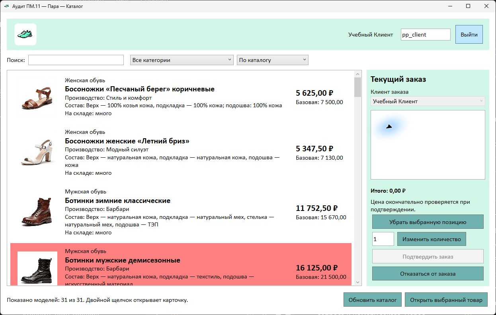
Реальный результат в WPF. Каталог демонстрационной БД в запущенном WPF-приложении. После входа учебного клиента доступны поиск, категория и сортировка; заказ оформляется для этого клиента.Справочник 48
Проверка оформления и причины отказа
1
Корзина и ожидание
Открыть модель, выбрать доступный размер и количество 1 → Добавить в заказ. Добавить другую модель. В корзине выбрать позицию, в поле количества ввести 2 → Изменить количество. До Подтвердить заказ проверить SELECT COUNT(*) FROM sales_order; и соответствующие available: значения прежние. Отказаться от заказа очищает корзину и также не меняет БД.
2
Сохранение
Снова добавить две позиции и подтвердите. В статусе появится номер заказа. SQL: SELECT * FROM sales_order ORDER BY order_id DESC LIMIT 1; затем SELECT * FROM order_line WHERE order_id=номер;. Сравнить выбранного клиента, количества и unit_price с pp_price на дату заказа; остатки уменьшаются ровно на купленное количество. После возврата каталог уже содержит новые значения.
3
Воспроизведите нехватку
Создать корзину из двух позиций, у второй через поле изменения количества задать значение больше фактического available. Подтвердите. Ожидается отказ и совет уменьшить количество. Сравнить число заказов, строки и оба остатка до/после: первая позиция также не сохранена. Затем уменьшите количество и повторить: теперь заказ сохраняется. Это проверяет причину в SQL и повторный успешный результат.
4
Повторный ключ
Администратором в SQL сохранить UUID() в переменную @key; вызовите pp_checkout с тем же @key дважды и одинаковыми позициями. Второй вызов возвращает тот же номер, число заголовков и остатков после первого вызова не меняется. В приложении busy защищает от двойного нажатия. При неясном исходе связи не изменять корзину, повторять подтверждение; после закрытия приложения сначала проверить состояние БД.
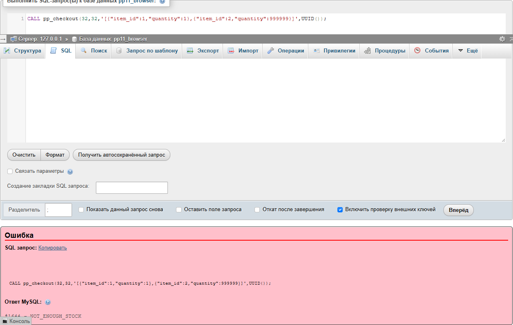
Реальный результат в phpMyAdmin. Реальная ошибка NOT_ENOUGH_STOCK в phpMyAdmin; отсутствие частичных изменений дополнительно подтверждено SQL-проверкой.Справочник 49
Проверка календаря, истории и конкуренции
1
Контролируемые даты
В отдельной проверочной копии выбрать модель, сохранить её исходную цену и историю. Для даты расчёта 2027-01-15 создать тестовый заказ этой модели с ordered_at 2026-12-31 и известной строкой: pp_price(product_id,'2027-01-15') даёт базовую цену. Перенести дату на 2027-01-01: теперь прошлый месяц заказа не содержит, цена составляет 75%. Чтобы исходные данные не мешали, другие заказы выбранной модели в декабре на проверочном наборе временно перенести вне интервала; все изменения выполнять внутри BEGIN/ROLLBACK либо в отдельной копии.
2
Историческая цена
Оформить заказ при действующей скидке. Сохранить unit_price. Администратором изменить базовую product.price в проверочной копии, открыть каталог и состав заказа: текущая цена меняется, сохранённая unit_price прежняя. При изменении даты заказа административной функцией unit_price также не меняется. Не переоценивать историю через UPDATE order_line.
3
Последняя позиция
В отдельной копии установите одному item_id available=1 и открыть два независимых подключения клиента. В первом BEGIN; SELECT available FROM stock_item WHERE item_id=... FOR UPDATE; требует административного проверочного подключения, поскольку клиенту прямой SELECT запрещён. Запустить pp_checkout из двух клиентских соединений с разными ключами; снять блокировку COMMIT в первом проверочном соединении. Только один заказ проходит, другой получает NOT_ENOUGH_STOCK; available=0. Вне тестовой копии не менять остатки ради проверки.
4
Что доказывает результат
Сообщение ошибки подтверждает отказ интерфейса, а контрольные SELECT подтверждают отсутствие частичного изменения. Два соединения подтверждают блокировки при конкуренции; последовательные вызовы лишь подтверждают отказ после исчерпания остатка. Зафиксировать оба вида доказательств.
Справочник 50
Проверка менеджера и администратора
1
Менеджер
Войти pp_manager → Заказы. Выбрать заголовок: нижняя таблица показывает модель, производство, размер, количество, цену и сумму. Нажать Добавить заказ — возвращаетесь к каталогу; выбрать клиента в правом списке, добавить модели и подтвердите. Снова открыть Заказы: дата и ФИО совпадают с выбранным клиентом. Изменить дату и Удалить товарную позицию недоступны.
2
Удаление целого заказа
Выбрать новый небольшой заказ, сохранить остатки его позиций. Удалить заказ → Нет: данные прежние. Повторить → Да: заголовок и строки исчезают, количества возвращаются. После Назад перечитан каталог. Повторное удаление того же order_id через разрешённый CALL получает ORDER_NOT_FOUND и не увеличивает остаток снова.
3
Администратор
Войти pp_admin → Заказы. У заказа с двумя позициями удалить одну: вернулся только её остаток, сумма заказа уменьшилась по исторической цене оставшейся. Удалить вторую: пустой заголовок исчез. Для другого тестового заказа изменить дату; исходные цены не меняются. Будущая дата должна отклониться. Выход возвращает гостя.
4
Проверка вне окна
Войти в phpMyAdmin отдельной сессией pp11_demo_client и попробовать CALL pp_change_date с идентификатором администратора: EXECUTE запрещён. Под менеджерским подключением действие также запрещено. Прямые SELECT customer, UPDATE stock_item и DROP TABLE запрещены всем подключениям приложения. Из клиентского подключения передать actor администратора в pp_checkout: pp_role откажет по несоответствию суффикса.
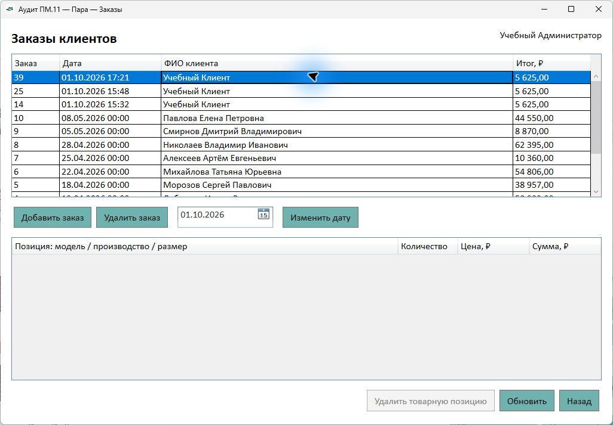
Реальный результат в WPF. Окно учебного администратора при загрузке состава выбранного заказа №39 с задержкой ответа MySQL. Нижняя таблица очищена, удаление позиции отключено до получения строк. После загрузки состав и доступность действия дополнительно проверены настоящим окном WPF и Repository.Справочник 51
Резервная копия и передача пользователю
1
Экспорт после доработки
Выбрать только свою рабочую БД → Экспорт → Обычный → SQL. Включите структуру, данные, функции и процедуры; проверить наличие CREATE FUNCTION pp_price и CREATE PROCEDURE pp_checkout в полученном SQL. Экспорт одной БД не включает серверные учётные записи и GRANT. Пароли и настройки приложения хранятся отдельно локально.
2
Восстановление
Создать новую БД pp11_restore_demo или pp11_restore_vNN → Импорт резервной копии. На том же сервере DEFINER исходных объектов существует. Выполнить точечные GRANT из 05_access.sql с именем восстановленной БД. В settings.local.json заменить Database у всех подключений, собрать и запустить приложение. Сравнить количества, суммы и исторические цены до нового заказа; повторить вход, каталог, подтверждение, список и удаление.
3
Передача
В README указать назначение проекта, используемую СУБД и версию приложения, последовательность создания БД/миграций/локальных подключений, способ запуска и восстановления. Объяснить ограничения учебного входа по логину. Подготовить репозиторий проекта без settings.local.json, паролей, личных путей и данных студентов. При сдаче проекта приложите ссылку на его репозиторий.
4
Своя область
Взять тот же номер варианта из учебной практики. Сохранить схему модели/размера/остатка, заменить Company и подключения, использовать её исходную БД. Данные торговой области не заменяются обувным набором демонстрации. Изображения, которых нет, корректно показываются через заглушку. Выполнить оба дополнительных условия области и повторить общие проверки.